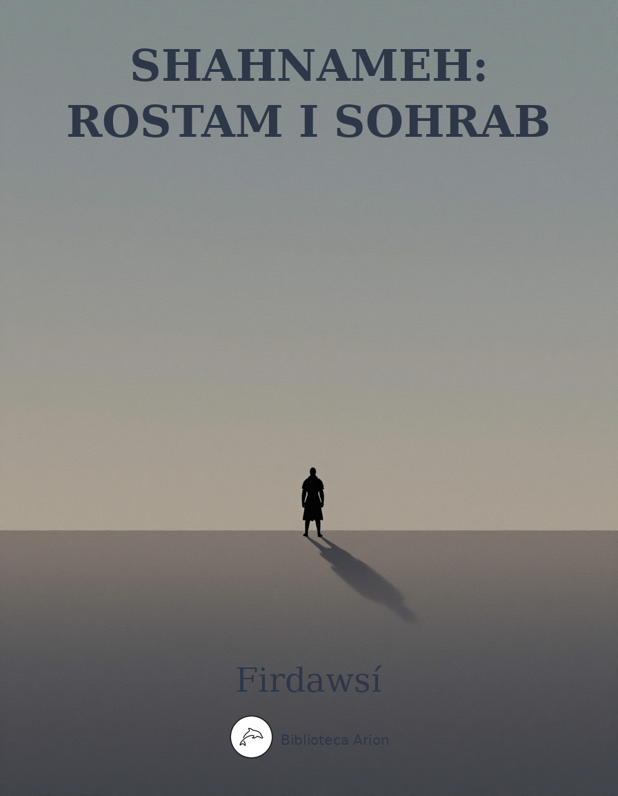

Shahnameh: Rostam i Sohrab
شاهنامه: داستان رستم و سهراب
Episodi tràgic del Shahnameh (Llibre dels Reis) on Rostam, l'heroi llegendari d'Iran, mata sense saber-ho el seu fill Sohrab en combat singular. Una de les tragèdies més cèlebres de la literatura universal.
شاهنامه — داستان رستم و سهراب
Shahnameh — Rostam i Sohrab
Autor: Abolqasem Firdawsí (ابوالقاسم فردوسی) Font: Wikisource persa Edició: Tashih-e Jules Mohl (تصحیح ژول مل) Llengua: persa (فارسی)
آغاز داستان سهراب
→گریختن افراسیاب از رزمگاه شاهنامه ازفردوسی تصحیح ژول مل آغاز داستان سهرابآمدن رستم به نخچیرگاه←
48707شاهنامه— آغاز داستان سهرابفردوسی
سهراب
آغاز داستان سهراب
کنون رزم سهراب ورستم شنو
دگرها شنیدستی این هم شنو
یکی داستان است پر آب چشم
دل نازک از رستم آید بخشم
اگر تند بادی برآید زگنج
بخاک افگند نارسیده ترنج
ستمگاره خوانیمش ار دادگر
هنرمند گوئیمش ار بی هنر
اگر مرگ دادست بی داد چیست
زمرگ همه بانگ وفریاد چیست ۵
از این راز جان تو آگاه نیست
وزین پرده اندر ترا راه نیست
همه تا در آز رفته فراز
بکس در نشد این در آز باز
برفتن اگر بهتر آیدت جای
گر آرام گیری بدیگر سرای
نخستین بدل مرگ بستایدی
دلیر وجوان خاک نیساودی
اگر آتشی گاه افروختن
بسوزد عجب نیست از سوختن ۱۰
بسوزد چو در سوزش آید درست
چو شاخ نو از بیخ کهنه برست
دم مرگ چون آتش هولناک
ندارد زبرنا وفرتوت باک
جوانرا چه باید بگیتی طرب
که نی مرگرا هست پیری سبب
درین جای رفتن بجای درنگ
بر اسپ قضا گر کشد مرگ تنگ
چنان دان که دادست بیداد نیست
چو داد آمدست جای فریاد نیست ۱۵
جوانی وپیری بنزد اجل
یکی دان چو دینرا نخواهی خلل
دل از گنج ایمان گر آگندهٔ
ترا خامشی به که تو بندهٔ
پرستش همان پیشه کن با نیاز
همان کار روز پسین را بساز
برین کار یزدان ترا کار نیست
اگر دیو با جانب انبار نیست
بگیتی درین کوش چون بگذری
که انجام اسلام با خود بری ۲۰
کنون رزم سهراب گویم درست
از آن کین کو با پدر چون بجست
زادن سهراب از مادرش تهمینه
→آمدن تهمینه دختر شاه سمنگان به نزد رستم شاهنامه ازفردوسی تصحیح ژول مل زادن سهراب از مادرش تهمینهگزیدن سهراب اسپ را←
48711شاهنامه— زادن سهراب از مادرش تهمینهفردوسی
زادن سهراب از مادرش تهمینه
چو نه ماه بگذشت بر دخت شاه
یکی کودک آمد چو تابنده ماه
تو گفتی گو پیلتن رستم است
وگر سام شیر است وگر نیرمست
چو خندان شد وچهره شاداب کرد
ورا نام تهمینه سهراب کرد
چو یکماه شد همچو یکسال شد
برش چون بر رستم زال بود
چو سه ساله شد ساز میدان گرفت
به پنجم دل شیران مردان گرفت ۱۴۰
چو ده ساله شد زآن زمین کس نبود
که یارست با او نبرد آزمود
بر مادر آمد بپرسید ازوی
بدو گفت گستاخ با من بگوی
که من چون زهمشیرگان برترم
همی زآسمان برتر آمد سرم
زتخم کیم وز کدامین گهر
چه گویم چو پرسند نام پدر
گرین پرسش از من تو داری نهان
نمانم ترا زنده اندر مهان ۱۴۵
بدو گفت مادر که بشنو سخن
برین شادمان باش وتندی مکن
تو پور گو پیلتن رستمی
زدستان سامی واز نیرمی
ازیرا سرت زآسمان برترست
که تخم تو زین نامور گهرست
جهان آفرین تا جهان آفرید
سواری چو رستم نیآمد پدید
چو سام نریمان بگیتی نبود
نیارست گردون سرشرا بسود ۱۵۰
یکی نامهٔ رستم جنگجوی
بیآورد وبنمود پنهان بدوی
سه یاقوت رخشان وسه بدره زر
کز ایران فرستاده بودش پدر
بدآنگاه که او زاده بودش زمام
فرستاده بودش پدر با پیام
بگفتش تو اینرا بخوبی نگر
که بایست فرستاد ای پر هنر
دگر گفت افراسیاب این سخن
نیابد که داند زسر تا به بن ۱۵۵
که او دشمن نامور رستمست
بتوران زمین زو همه ماتمست
مبادا که گردد بتو کینخواه
زخشم پدر پور سازد تباه
پدر گر بداند که تو زین نشان
شدستی سرافراز گردنکشان
چو داند بخواند ترا نزد خویش
دل مادرت گردد از درد ریش
چنین گفت سهراب کاندر جهان
ندارد کسی این سخن در نهان ۱۶۰
بزرگان جنگ آور از باستان
زرستم زنند این زمان داستان
نبرده نژادی که چون این بود
نهان کردن از من چه آئین بود
کنون من زترکان جنگ آوران
فراز آورم لشکری بی کران
برانگیختم از کاخ کاؤس را
ببرّم از ایران پی طوس را
نه گرگین بمانم نه گودرز وگیو
نه کستهم نوذر نه بهرام نیو ۱۶۵
برستم دهم گرز واسپ وکلاه
نشانمش بر کاخ کاؤس شاه
وز ایران بتوران شوم جنگجوی
ابا شاه روی اندر آرم بروی
بگیرم سر تخت افراسیاب
سر نیزه بگذارم از آفتاب
ترا بانوی شهر ایران کنم
بچنگ یلان جنگ شیران کنم
چو رستم پدر باشد ومن پسر
نماند بگیتی کسی تاجور ۱۷۰
چو روشن شود روی خورشید وماه
ستاره چرا بر فرازد کلاه
گرفتن سهراب دژ سفید را
→نامهٔ گژدهم به نزدیک کاؤس شاهنامه ازفردوسی تصحیح ژول مل گرفتن سهراب دژ سفید رانامهٔ کاؤس به رستم و خواندن او از زابلستان←
48756شاهنامه— گرفتن سهراب دژ سفید رافردوسی
گرفتن سهراب دژ سفید را
چو خورشید بر زد سر از برز گوه
میانها ببستند توران گروه
سپهدار سهراب نیزه بدست
یکی بارهٔ تیز تک بر نشست
بدآن بد که گردان دژ را همه
بگیرد ببندد بسان رمه ۳۹۵
چو آهنگ دژ کرد کسرا ندید
خروشی چو شیر ژیان بر کشید
بیآمد در دژ کشادند باز
ندیدند در دژ یکی رزم ساز
بشب رفته بودند با گژدهم
سواران دژدار وگردان بهم
که زیر دژ اندر یکی راه بود
که دشمن از آن ره نه آگاه بود
چو سهراب ولشکر بدژ بر رسید
بباره درون گژدهم را ندید ۴۰۰
هر آنکس که بود اندر آن جایگاه
گنه کار بودند اگر بیگناه
بفرمان همه پیش او آمدند
بجان هر کسی چاره جوی آمدند
همی جست گردآفرید وندید
دلش مهر وپیوند او برگزید
بدل گفت از آنپس دریغا دریغ
که شد ماه تابنده در زیر میغ
چو نامه بنزدیک خسرو رسید
غمی شد دلش کآن سخنها شنید ۴۰۵
گرانمایگانرا زلشکر بخواند
وز آن داستان چند گونه براند
نشستند با شاه ایران بهم
بزرگان لشکر همه بیش وکم
چو طوس وچو گودرز کشواد وگیو
چو گرگین وبهرام وفرهاد نیو
سپهدار نامه بر ایشان بخواند
کم وبیش آن پهلوان را براند
چنین گفت با پهلوانان براز
که این کار گردد بما بر دراز ۴۱۰
بدینسان که گژدهم گوید همی
از اندیشه دلرا بشوید همی
چه سازیم ودرمان این کار چیست
از ایران هم آورد این مرد کیست
بر آن بر نهادند یکسر که گیو
بزابل شود پیش سالار نیو
برستم رساند از آن آگهی
که با بیم شد تخت شاهنشهی
گو پیل تن را بدین رزمگاه
بخواند که اویست پشت سپاه ۴۱۵
نشست آنگهی رای زین با دبیر
که کاری گزاینده بد ناگزیر
فرستادن افراسیاب بارمان و هومان را به نزدیک سهراب
→گزیدن سهراب اسپ را شاهنامه ازفردوسی تصحیح ژول مل فرستادن افراسیاب بارمان و هومان را به نزدیک سهرابرسیدن سهراب به دژ سفید←
48713شاهنامه— فرستادن افراسیاب بارمان و هومان را به نزدیک سهرابفردوسی
فرستادن افراسیاب بارمان وهومانرا بنزدیک سهراب
خبر شد بنزدیک افراسیاب
که افگند سهراب کشتی بر آب
یکی لشکری شد برو انجمن
همی سر فرازد چو سرو چمن
هنوز از دهن بوی شیر آیدش
همی رای شمشیر وتیر آیدش ۲۱۰
زمینرا بخنجر بشوید همی
کنون رزم کاؤس جوید همی
سپاه انجمن شد برو بر بسی
نیآمد همی یادش از هر کسی
سخن زین درازی چه باید کشید
هنر برتر از گوهر آمد پدید
چو افراسیاب آن سخنها شنود
خوش آمدش وخندید وشادی نمود
زلشکر گزید از دلاور سران
کسی کو گراید بگرز گران ۲۱۵
سپهبد چو هومان وچون بارمان
که در جنگ شیران نجستی زمان
ده ودو هزار از دلیران گرد
گزیده زلشکر بدیشان سپرد
چنین گفت کین چاره اندر نهان
بدارید وسازید کار جهان
پسر را نباید که داند پدر
زپیوند جان وزمهر گهر
چو روی اندر آرند هر دو بروی
تهمتن بود بی گمان جنگ جوی ۲۲۰
مگر کآن دلاور گو سال خورد
شود کشته بر دست این شیر مرد
چو بی رستم ایران بچنگ آوریم
جهان پیش کاؤس تنگ آوریم
وز آنپس بگیریم سهراب را
ببندیم یکشب بدو خوابرا
وگر کشته گردد بدست پدر
از آن پس بسوزد دل نامور
برفتند بیدار دو پهلوان
بنزدیک سهراب روشن روان ۲۲۵
به پیش اندرون هدیهٔ شهریار
ده اسپ وده استر بزین وببار
زپیروزه تخت وزبیجاده تاج
سر تاج درّ پایهٔ تخت عاج
یکی نامه با لانهٔ دلپسند
نبشته بنزدیک آن ارجمند
که گر تخت ایران بچنگ آوری
زمانه بر آزاید از داوری
ازین مرز تا آن بسی راه نیست
سمنگان وایران وتوران یکیست ۲۳۰
فرستمت چندان که باید سپاه
تو بر تخت بنشین وبر نه کلاه
بتوران چو هومان وچون بارمان
دلیر وسهبد نبد بی گمان
فرستادم اینک بنزدیک تو
که باشند یکچند مهمان تو
اگر جنگ جوئی تو جنگ آورند
جهان بر بداندیش تنگ آورند
چنین نامه وخلعت شهریار
ببردند با اسپ واستر ببار ۲۳۵
پس آمد بسهراب از ایشان خبر
پذیره شدنرا ببستش کمر
بشد با نیا پیش هومان چو باد
سپه دید چندان دلش گشت شاد
چو هومان ورا دید با یال وکفت
فرو ماند یکبار ازو در شکفت
بدو داد پس نامهٔ شهریار
ابا هدیه وآلت کارزار
همان نیز بیدار دو پهلوان
بگفتند پیغام شاه جهان ۲۴۰
جهانجوی چون نامهٔ او بخواند
ازآنجایگه تیز لشکر براند
بزد کوس وسوی ره آورد روی
جهان پر از لشکر وهای وهوی
کسی را نبد تاب با او بچنگ
اگر شیر پیش آمدش گر نهنگ
سوی مرز ایران سپهرا براند
همی سوخت آباد وچیزی نماند
تاختن سهراب بر لشکر کاوس
→پرسیدن سهراب از نام سرداران ایران از هجیر شاهنامه ازفردوسی تصحیح ژول مل تاختن سهراب بر لشکر کاؤسرزم رستم با سهراب←
48762شاهنامه— تاختن سهراب بر لشکر کاؤسفردوسی
تاختن سهراب بر لشکر کاؤس
چو بشنید گفتارهای درشت
ازو روی برگاشت وبنمود پشت
نهان کرد ازو روی وچیزی نگفت
بماند خیره از گفتهای نهفت
زبالا زدش تند یک مشت دست
بیفگندش آمد بجای نشست ۸۵۰
بسی کرد اندیشهای دراز
زهر گونهٔ کرد پیکار ساز
ببست از پی کینه آنگه کمر
نهاد از سر سروری تاج زر
زره بست وخفتان بپوشید شاد
یکی ترگ رومی بسر بر نهاد
گرفتش سنان وکمان وکمند
گران گرز را پهلو دیو بند
زتندی بجوش آمدش خون برگ
نشست از بر بارهٔ تیز تگ ۸۵۵
خروشید وبگرفت نیزه بدست
به آوردگاه رفت چون پیل مست
برون آمد ورای ناورد کرد
برآورد بر چهرهٔ ماه گرد
وز آنپس دمان شد بپرده سرای
بنیزه برآرد بالا زجای
بکردار گوران زچنگال شیر
رمیدند ازو سروران دلیر
کس از نامداران ایران سپاه
نیارست کردن بدو در نگاه ۸۶۰
زپای ورکاب وزدست وعنان
زبازو وآن تاب داده سنان
سران ودلیران شدند انجمن
بگفتند که اینت گو پیلیت
نشاید نگاه کردن آسان بدوی
که بارد شدن پیش او جنگجوی
وز آنچس خروشید سهراب گرد
همی شاه کاؤس را بر شمرد
چنین گفت کای شاه آزاده مرد
چه گونه است کارت بدشت نبرد ۸۶۵
چرا کردهٔ نام کاؤس کی
که در جنگ شیران نداری تو پی
گر این نیزه در مشت پیچان کنم
سپاه ترا حمله بی جان کنم
یکی سخت سوگند خوردم به بزم
در آن شب کجا کشته شد ژنده رزم
کز ایران نمانم یکی نیزه دار
کنم زنده کاؤس کی را بدار
که داری از ایرانیان تیز چنگ
که پیش من آید بدین دشت جنگ ۸۷۰
بگفت وهمی بود خاموش بس
از ایران نداد ایچ پاسخش کس
خم آورد پشت وسنان ستیخ
بزد تند وبر کند هفتاد میخ
سراپرده یک بهره آمد بپای
زهر سو درآمد در کرّه نای
غمی گشت کاؤس وآواز داد
که این نامداران فرّخ نژاد
یکی نزد رستم برید آگهی
کزین ترک شد مغز گردان تهی ۸۷۵
ندارم سواری ورا هم نورد
از ایران نیارد کس این کار کرد
بشد طوس وپیغام کاؤس برد
شنیده همه پیش او برشمرد
بدو گفت رستم که هر شهریار
که کردی مرا ناگهان خواستار
گهی جنگ بودی گهی ناز وبزم
ندیدم زکاؤس جز رنج رزم
بفرمود تا رخشرا زین کنند
سواران بروها پر از چین کنند ۸۸۰
زخیمه نگه کرد رستم بدشت
زرد گیو را بدید که ایدر گذشت
نهاد از بر رخش رخشنده زین
همی گفت گرگین که بشتاب همین
همی بست بر باره رهّام تنگ
ببرگستوان بر زده طوس چنگ
همی این بدین این بدان گفت زود
تهمتن چو از پرده آوا شنود
بدل گفت این رزم آهرمنست
نه این رستخیز از پی یکتنست ۸۸۵
بزد دست وپوشید ببر بیان
ببست آن کیانی کمر بر میان
نشست از بر رخش و بگرفت راه
زواره نگهبان گاه وسپاه
بدو گفت از ایدر مرو پیشتر
بمن دار گوش یلان بیشتر
درفشی ببردند با او بهم
همی رفت پرخاشجوی ودژم
چو سهراب را دید با بال وشاخ
برش چون بر سام چنگی فراخ ۸۹۰
بدو گفت از ایدر بیکسو شویم
ازین هر دو لشکر ببیرون شویم
بمالید سهراب کف را بکف
به آوردگاه رفت از پیش صف
بگفت او برستم برو تا رویم
بیکجای هر دو دو مرد گویم
از ایران نخواهی همی یار کس
چو من باشم وتو بآورد بس
به آوردگه مر ترا جای نیست
ترا خود بیک مشت من پای نیست ۸۹۵
ببالا بلندی وبا کتف ویال
ستم یافت یالت زبسیار سال
نگه کرد رستم بدآن سرفراز
بدآن سفت وچنگ ورکاب دراز
بدو گفت نرم این جوانمرد نرم
زمین خشک وسر وهوا نرم وگرم
به پیری بسی دیدم آوردگاه
بسی بر زمین پست کردم سپاه
تبه شد بسی دیو بر دست من
نگشتم بسوئی که بودم شکن ۹۰۰
نگه کن مرا جون بینی به جنگ
اگر زنده مانی نترس از نهنگ
مرا دید در جنگ دریا وکوه
که با نامداران توران گروه
چه کردم ستاره گوای منست
بمردی جهان زیر پای منست
همی رحمت آمد بتو بر دلم
نخواهم که جانت زتن بگذلم
نمانی بترکان بدین یال وسفت
به ایران ندانم ترا تیز جفت ۹۰۵
چو آمد زرستم چنین گفت وگوی
بجنبید سهراب را دل بدوی
بدو گفت کز تو بپرستم سخن
همه راستی باید افگند بن
یکایک نژادت مرا یاد دار
زگفتار خوبت مرا شاد دار
من ایدون گمانم که تو رستمی
هم از تخمهٔ نامور نیرمی
چنین داد پاسخ که رستم نیم
هم از تخمهٔ سام نیرم نیم ۹۱۰
که او پهلوانست ومن کهترم
نه با تخت وگاهم نه با افسرم
از امّید سهراب شد ناامید
بدو تیره شد روی روز سفید
رزم رستم با سهراب
→تاختن سهراب بر لشکر کاؤس شاهنامه ازفردوسی تصحیح ژول مل رزم رستم با سهراببازگشت رستم و سهراب به لشکرگاه←
48763شاهنامه— رزم رستم با سهرابفردوسی
رزم رستم با سهراب
به آوردگاه رفت ونیزه گرفت
همی مانده از گفت مادر شکفت
یکی تنگ میدان فرو ساختند
بکوتاه نیزه همی تاختند
نماند ایچ بر نیزه بند وسنان
بچپ باز بردند هر دو عنان ۹۱۵
بشمشیر هندی برآویختند
همی زآهن آتش فرو ریختند
برخم اندرون تیغ شد ریز ریز
چه زخمی که پیدا کند رستخیز
گرفتند از آنپس عمود گران
غمی گشت بازوی کنداوران
زنیرو عمود اندر آمد بخم
چمان باد پایان وگردان دژم
زاسپان فرو ریخت برگستوان
زره پاره شد بر میان گوان ۹۲۰
فرو ماند اسپ ودلاور زکار
یکی را نبد دست وبازوش یاز
تن از خوی پر آب وهمه گام خاک
زبان گشته از تشنگی چاک چاک
یکی از دگر ایستادند دور
پر از درد باب وپر از رنج پور
جهان شکفتا که کردار تست
شکسته هم از تو هم از تو درست
ازین دو یکیرا نجنبید مهر
خرد دور بد مهر ننمود چهر ۹۲۵
همی بچّه را باز داند ستور
چه ماهی بدریا چه در دشت گور
نداند همی مردم از رنج وآز
یکی دشمنی را زفرزند باز
بدل گفت رستم که هرگز نهنگ
ندیدم که آید بدینسان به جنگ
مرا خوار شد جنگ دیو سپید
زمردی شد امروز دلم ناامید
زدست یکی ناسپرده جهان
نه گردی نه نام آوری از مهان ۹۳۰
بسپری رسانیدم از روزگار
دو لشکر نظاره بدین کارزار
چو آسوده شد بارهٔ هر دو مرد
از آزار جنگ وزننگ ونبرد
بزه بر نهادند هر دو کمان
جوانه همان سالخورده همان
زره بود وخفتان وببر بیان
زکلک وزپیکان نیآمد زیان
غمی شد دلی هر دو از یکدگر
گرفتند هر دو دوال کمر ۹۳۵
تهمتن اگر دست بردی بسنگ
بکندی سیه کوه را روز جنگ
کمربند سهرابرا چاره کرد
که از زین بجفباند اندر نبرد
میان جوانرا نبد آگهی
بماند از هنر دست رستم تهی
فرو داشت دست از کمربند اوی
تهمتن چنان خیره مانده بدوی
دو شیر اوژن از جنگ سیر آمدند
تبه گشته وخسته دیر آمدند ۹۴۰
دگر باره سهراب گرز گران
ززین برکشید وبیفشرد ران
بزد گرز وآورد کتفش بدرد
بپیچید ودرد از دلیری بخورد
بخندید سهراب گفت ای سوار
بزخ دلیران نهی پایدار
برزم اندرون رخش گوئی خرست
دو دست سوار از همه برترست
اگر چه گوی سرو بالا بود
جوانی کند پیر کانا بود ۹۴۵
بسستی رسید این از آن آن ازین
چنان تنگ شد بر دلیران زمین
که از یکدگر روی برکاشتند
دل وجان به اندوه بگذاشتند
تهمتن بتوران سپه شد بجنگ
برآنسان که نخچیر بیند پلنگ
به ایران سپه رفت سهراب گرد
عنان بارهٔ تیز تگ را سپرد
بزد خویشتنرا ابر آن سپاه
زگردش بسی نامور شد تباه ۹۵۰
میان سپاه اندر آمد چو گرگ
پراگنده گشتند خرد وبزرگ
دل رستم اندیشهٔ کرد بد
که کاؤسرا بی گمان بد رسد
ازین پر هنر ترک نو خاسته
بخفتان بر وبازو آراسته
بلشکرگه خویش تازید زود
که اندیشه دلرا بر آن گونه بود
میان سپه دید سهرابرا
زمین لعل کرده بخوناب را ۹۵۵
سر نیزه پر خون وخفتان ودست
تو گفتی زنخچیر گشتست مست
غمی گشت رستم چو اورا بدید
خروشی چو شیر ژیان برکشیید
بدو گفت که ای تیز خونخوار مرد
زایران سپه جنگ با تو که کرد
چرا دست بدرا نسودی همه
چو گرگ آمدی در میان رمه
بدو گفت سهراب توران سپاه
ازین رزم دورند وهم بی گناه ۹۶۰
تو آهنگ کردی بر ایشان نخست
کسی با تو پیکار وکینه نجست
بدو گفت رستم که شد تیره روز
چو پیدا کند تیغ گیتی فروز
بدین دشت هم دار وهم عنبرست
که روشن جهان زیر تیغ اندرست
گرایدون که شمشیر با بوی شیر
چنین آشنا شد تو هرگز ممیر
بکریم شبگیر با تیغ کین
تو رو تا چه خواهد جهان آفرین ۹۶۵
افگندن سهراب رستم را
→بازگشت رستم و سهراب به لشکرگاه شاهنامه ازفردوسی تصحیح ژول مل افگندن رستم سهراب راکشته شدن سهراب از رستم←
48765شاهنامه— افگندن رستم سهراب رافردوسی
افگندن سهراب رستمرا
چو خورشید رخشان برآورد سر
سیه زاغ پرّان فرو برد پر
تهمتن بپوشید ببر بیان
نشست از بر اژدهای دمان ۱۰۵۰
سپهرا دو فرسنگ بد در میان
کشادن نیارست یکتن میان
بیآمد بر آن دشت آوردگاه
نهاده بسر بر زآهن کلاه
همه تلخی از بهر بیشی بود
مبادا که با آز خویشی بود
وز آن سوی سهراب با انجمن
همی می گسارید با رود زن
بهومان چنین گفت کین شیرمرد
که با من همیگردد اندر نبرد ۱۰۵۵
زبالای من نیست بالاش کم
برزم اندرون دل ندارد دژم
بر وکتف ویالش همانند من
تو گوئی که داننده بر زد رسن
زپای ورکابش همی مهر من
بجنبید بشرم آورد چهر من
نشانهای مادر بیایم همی
بدل نیز لختی بتابم همی
گمانی برم من که او رستمست
که چون او نبرده بگیتی کمست ۱۰۶۰
نباید که من با پدر جنگ جوی
شوم خیره روی اندر آرم بروی
بدو گفت هومان که در کارزار
رسیدست رستم بمن چندبار
شنیدم که در جنگ مازندران
چه کرد آن دلاور بگرز گران
بدآن رخش ماند همی رخش اوی
ولیکن ندارد پی وپخش اوی
بشبگیر چون بر دمید آفتاب
سر جنگ جویان برآمد زخواب ۱۰۶۵
بپوشید سهراب خفتان رزم
سرش پر زرزم ودلش پر زبزم
بیآمد خروشان برآن دشت جنگ
بچنگ اندرون گرزهٔ گاو رنگ
زرستم بپرسید خندان دو لب
تو گفتی که با او بهم بود شب
که شب چون بدی روز چون خاستی
زپیکار دل بر چه آراستی
زکفت بفگن این گرز وشمشیر کین
بزن جنگ بیداد را بر زمین ۱۰۷۰
نشینیم هر دو پیاده بهم
بمی تازه داریم روی دژم
به پیش جهاندار پیمان کنیم
دل از جنگ جستن پشیمان کنیم
بمان تا کسی دیگر آید برزم
تو با من بساز وبیآرای بزم
دل من بر تو مهر آورد
همی آب شرمم بچهر آورد
همانا که داری زگردان نژاد
کنی پیش من گوهر خویش یاد ۱۰۷۵
زمن نام پنهان نبایدت کرد
چو گشتی تو با من کنون در نبرد
مگر پور دستان سام یلی
کزین نامور رستمی زابلی
بدو گفت رستم که ای نامجوی
نکردیم هرگز چنین گفت وگوی
زکشتی گرفتن سخن بود دوش
نگیرم فریب تو زین در بگوش
نه من کودکم گر تو هستی جوان
بکشتی کمر بسته دارد میان ۱۰۸۰
بکوشیم وفرجام کار آن بود
که فرمان ورای جهانبان بود
بسی گشته ام من نشیب وفراز
نیم مرد گفتار زرق ومجاز
بدو گفت سهراب که ای مرد پیر
اگر نیست پند منت دلپذیر
مرا آرزو بد که بر بسترت
برآید بهنگام هوش از برت
کسی کز تو ماند ستودان کند
بپرّد روان تن بزندان کند ۱۰۸۵
اگر هوش تو زیر دست منست
بفرجام یزدان بیازیم دست
از اسپان جنگی فرود آمدند
هشیوار وبا کبر وخود آمدند
ببستند بر سنگ اسپ نبرد
برفتند هر دو روان پر زدرد
چو شیران بکشتی برآویختند
زتنها خوی وخون همی ریختند
زشبگیر تا سایه گسترد هور
همی این بر آن آن برین کرد زور ۱۰۹۰
بزد دست سهراب چون پیل مست
چو شیر دمنده زجا در بجست
کمربند رستم گرفت وکشید
زبس زور گفتی تنش بر درید
یکی بانگ بر زد پر از خشم وکین
تو گفتی بدرّید روی زمین
گرفتش زجای آن تن پیل مست
برآوردش از جای وبنهاد پست
نشست از بر سینهٔ پیل تن
پر از خاک چنگال وروی ودهن ۱۰۹۵
بکردار شیری بر گور نر
زند دست وگور اندر آرد بسر
یکی خنجر آبگون برکشید
همی خواست از تن سرشرا برید
نگه کرد رستم بآواز گفت
که این زار باید کشاد از نهفت
بسهراب گفت ای یل شیرگیر
کمند افگن وگرز وشمشیر وتیر
دگر گونه تر باشد آئین ما
جز این باشد آرایش دین ما ۱۱۰۰
کسی کو بکشتی نبرد آورد
سر مهتری زیر گرد آورد
نخستین که پشتش نهد بر زمین
نبرّد سرش گرچه باشد بکین
وگر بار دیگرش زیرآورد
بافگندش نام شیر آورد
روا باشد از سر کند زو جدا
برین گونه بر باشد آئین ما
بدین چاره از چنگ آن اژدها
همی خواست کاید زکشتن رها ۱۱۰۵
دلیر جوان سر بگفتار پیر
بداد وببود این سخن دلپذیر
یکی از دلیری دوم از زمان
سوم از جوانمردیش بی گمان
رها کردش زو دست وآمد بدشت
بدشتی که بر پیشش آهو گذشت
همی کرد نخچیر ویادش نبود
از آن کس که با او نبرد آزمود
همی دیر شد تا که هومان زگرد
بیآمد بپرسید ازو از نبرد ۱۱۱۰
بهومان بگفت آن کجا رفته بود
سخنها که رستم بدو گفته بود
بدو گفت هومان دریغ ای جوان
بسیری رسیدی همانا زجان
دریغ آن بر وبرز وبالای تو
رکاب دراز ویلی پای تو
هزبری که آورده بودی بدام
رها کردی از دست وشد کار خام
نگه کن کزین بیعهده کار کرد
چه آید به پیشت بروز نبرد ۱۱۱۵
یکی داستان زد برین شهریار
که دشمن مدار ارچه خردست خوار
بگفت ودل از جان او برگرفت
پر انده همی ماند اندر شکفت
بهومان چنین گفت سهراب گرد
که اندیشه از دل بباید سترد
که فردا بیآید بر من بجنگ
به بینی بگردنش بر پالهنگ
بلشکرگه خویش بنهاد روی
بخشم وپر از غم دل از کار اوی ۱۱۲۰
چو رستم زچنگ وی آزاد بود
بسان یکی سرو آزاد بود
خرامان بشد سوی آب روان
چنان چون شده باز یابد روان
بخورد آب وروی وتن وسر بشست
به پیش جهان آفرین شد نخست
همی خواست پیروزی ودستگاه
نبود آگه از بخش خورشید وماه
که چون رفت خواهد سپهر از برش
بخواهد ربودن کلاه از سرش ۱۱۲۵
شنیدم که رستم از آغاز کار
چنان یافت نیرو زپروردگار
که گر سنگ را او بسر بر شدی
همی هر دو پایش بدو در شدی
از آن زور پیوسته رنجور بود
دل او از آن آرزو دور بود
بنالید بر کردگار جهان
بزاری همی آرزو کرد آن
که لختی ززورش ستاید همی
برفتن بره بر تواند همی ۱۱۳۰
برآنسان که از پاک یزدان بخوان
زنیروی آن کوه پیکر بکاست
چو باز آنچنان کار پیش آمدش
دل از بیم سهراب ریش آمدش
بیزدان بنالید که ای کردگار
بدین کار این بنده باش یار
همان زور خوهم که آغاز کار
مرا دادی ای پاک پروردگار
بدو بازو داد آنچنان کش بخواست
بیفزود زور تن آنکس بکاست ۱۱۳۵
وز آن آبخور شد بجای نبرد
پر اندیشه بودش دل وروی زرد
همی تاخت سهراب چون پیل مست
کمندی ببازو کمانی بدست
گرازان وچون شیر نعره زنان
سمندش جهان وجهانرا کنان
برآنگونه رستم چو او را بدید
عجب ماند ودروی همی بنگرید
غم گشت ازو مانده در شکفت
زپیکارش اندازها برگرفت ۱۱۴۰
چو سهراب باز آمد اورا بدید
زباد جوانی دلش بر دمید
چو نزدیکتر شد برو بنگرید
مر اورا بر آن فرّ وآن زور دید
چنین گفت کای رسته از جنگ من
چرا آمدی باز در چنگ من
چرا آمدی باز پیشم بگوی
سوی راستی خود نداری تو روی
کشته شدن سهراب از رستم
→افگندن سهراب رستم را شاهنامه ازفردوسی تصحیح ژول مل کشته شدن سهراب از رستمنوشدارو خواستن رستم از کاؤس←
48766شاهنامه— کشته شدن سهراب از رستمفردوسی
کشته شدن سهراب از رستم
دگر باره اسپان ببستند سخت
بسر بر همی گشت بدخواه بخت ۱۱۴۵
هرآنگه که خشم آورد بخت شوم
شود سنگ خارا بکردار موم
بکشتی گرفتن نهادند سر
گرفتند هر دو دوال کمر
سرافراز سهرابرا زور دست
تو گفتی که چرخ بلندش ببست
غمی گشت رستم بیازید چنگ
گرفت آن سر ویال جنگی نهنگ
خم آورد پشت دلیر جوان
زمانه بیآمد نبودش توان ۱۱۵۰
زدش بر زمین بر بکردار شیر
بدانست که آن هم نماند بزیر
سبک تیغ تیز از نیام برکشید
بر شیر بیدار دل بر درید
هرآنگه که تو تشنه گشتی بخون
بیآلودی این خنجر آبگون
زمانه بخون تو تشنه شد
بر اندام تو موی دشنه شود
بپیچید از آنپس یکی آه کرد
زنیک وبد اندیشه کوتاه کرد ۱۱۵۵
بدو گفت کین بر من از من رسید
زمانه بدست تو دادم کلید
تو زین بیگناهی که این کوزپشت
مرا بر کشید وبزودی بکشت
ببازی بگویند همه سال من
بخاک اندر آمد چنین یال من
نشان داد مادر مرا از پدر
زمهر اندر آمد روانم بسر
همی جستمش تا ببینمش روی
چنین جان بدادم بدین آرزوی ۱۱۶۰
دریغا که رنجم نیآمد ببر
ندیدم درین هیچ روی پدر
کنون گر تو در آب ماهی شوی
ئبا چون شب اندر سیاهی شوی
وگر چون ستره شوی بر سپهر
ببرّی زروی زمین پاک مهر
بخواهد هم از تو پدر کین من
چو بیند که خشتست بالین من
ازین نامداران وگردنکشان
کسی هم برد نزد رستم نشان ۱۱۶۵
که سهراب کشتست وافگنده خوار
همی خواست کردن ترا خواستار
چو بشنید رستم سرش خیره گشت
چهان پیش چشمش همه خیره گشت
همی بی تن وتاب وبی توش گشت
بیفتاد از پای وبیهوش گشت
بپرسید از آنپس که آمد بهوش
بدو گفت با ناله وبا خروش
بگو تا چه داری زرستم نشان
که گم باد نامش زگردنکشان ۱۱۷۰
که رستم منم کم مماناد نام
نشیناد بر ماتمم زال سام
بزد نعره وخونش آمد بجوش
همی کند موی وهمی زد خروش
چو سهراب رستم بدینسان بدید
بیفتاد وهوش از سرش بر دمید
بدو گفت گر زآن که رستم توئی
بکشتی مرا خیره بر بد خوئی
زهرگونه بودم ترا رهنمای
نجنبید یکباره مهرت زجای ۱۱۷۵
کنون بند بکشای از جوشنم
برهنه ببین این تن روشنم
چو برخاست آواز کوس از درم
بیآمد پر از خون دو رخ مادرم
همی جانش از رفتن من بخست
یکی مهره بر بازوی من ببست
مرا گفت که این از پدر یادگار
بدار وببین تا که آید بکار
کنون کارگر شد که پیکار گشت
پسر پیش چشم پدر خوار گشت ۱۱۸۰
چو بکشاد خفتان وآن مهره دید
همه جامه بر خویشتن بر درید
همی گفت کای کشته بر دست من
ستوده بهر جای وهر انجمن
همی ناله کرد وهمی کند موی
سرش پر زخاک وپر از آب روی
همی گفت سهراب کین چاره نیست
بآب دو دیده نباید گریست
ازین خویشتن کشتن اکنون چسود
چنین رفت واین بودنی کار بود ۱۱۸۵
چو خورشید تابان زگنبد بگشت
نیآمد تهمتن بلشکر زدشت
زلشکر بیآمد هشیوار بیست
که تا اندر آوردگاه کار چیست
دو اسپ اندر آن دشت بر پای بود
پر از گرد ورستم دگر جای بود
گو پیلتنرا چو بر پشت زین
ندیدند گردان در آن دشت کین
چنان بدگمان شان کو کشته شد
سر نامداران همه گشته شد ۱۱۹۰
بکاؤس کی تاختند آگهی
که تخت مهی زرستم تهی
زلشکر برآمد سراسر خروش
برآمد زمانه یکایک بجوش
بفرمود کاؤس تا بوق وکوس
دمیدند وآمد سپهدار طوس
وزآنپس بلشکر چنین گفت شاه
که ایدر هیونی سوی رزمگاه
بتازید تا کار سهراب چیست
که بر شهر ایران بباید گریست ۱۱۹۵
اگر کشته شد رستم جنگجوی
از ایران یارد شدن پیش اوی
بانبوه زخمی بباید زدن
بدین رزمگاه هم نباید بدن
چو آشوب برخاست از انجمن
چنین گفت سهراب با پیلتن
که اکنون چو روز من اندر گذشت
همان کار ترکان دگرگونه گشت
همه مهربانی بر آن کن که شاه
سوی جنگ ترکان نراند سپاه ۱۲۰۰
که ایشان بپشتی من جنگجوی
سوی مرز ایران نهادند روی
بسی روزرا داده بودم نوید
بسی داده بودم زهر در امید
چه دانستم ای پهلو نامور
که باشد روانم بدست پدر
نباید که بینند رنجی براه
مکن جز بنیکی بریشان نگاه
ازین دژ دلیری ببند منست
گرفتار خمّ کمند منست ۱۲۰۵
بسی زو نشان تو پرسیده ام
همی بد خیال تو در دیده ام
جز آن بود یکسر سخنهای اوی
ازو باز ماند تهی جای اوی
که گشتم زگفتار او ناامید
شده لاجرم تیره روز سفید
ببین تا کدامست از ایرانیان
نباید که آید بجانش زیان
نشانی که بد داده مادر مرا
بدیدم نبد دیده باور مرا ۱۲۱۰
چنینیم نوشته بد اختر بسر
که من کشته گردم بدست پدر
چو برق آمدم رفتم اکنون چو باد
بمینو مگر بینمت نیز شاد
زسختی برستم فروبسته دم
پر آتش دل ودیدگان پر زنم
نشست از بر رخش رستم چو گرد
پر از خون دل ولب پر از باد سر
بیآمد به پیش سپه با خروش
دل از کردهٔ خویش پر از درد وجوش ۱۲۱۵
چو دیدند ایرانیان روی اوی
همه بر نهادند بر خاک روی
ستایش گرفتند بر کردگار
که او زنده باز آمد از کارزار
چو زآن گونه دیدند پر خاک سر
دریده همه جامه وخسته بر
بپرسش بگفتند کین کار چیست
ترا دل برین گونه بهر کیست
بگفت آن شکفتی که خود کرده بود
گرامی پسررا که آزرده بود ۱۲۲۰
همه برگرفتند با او خروش
نماند آن زمان با سپهدار هوش
چنین گفت با سرفرازان که من
نه دل دارم امروز گوئی نه تن
شما جنگ توران مجوئید کس
که این بد که من کردم امروز بس
زواره بیآمد بر پیلتن
دریده بتن جامه وخسته تن
چو رستم برادر بر آن گونه دید
بگفت آنچه از پور کشنه شنید ۱۲۲۵
پشیمان شدم گفت از کار خویش
بیایم مکافات از اندازه بیش
پسررا بکشتم بپیرانه سر
بریدم پی وبیخ آن نامور
دریدم جگرگاه پور جوان
بگرید بدو چرخ تا جاودان
فرستاد نزدیک هومان پیام
که شمشیر کین ماند اندر نیام
نگهدار آن لشکر اکنون توئی
نگه کن بریشان مگر نغنوی ۱۲۳۰
که با تو مرا روز پیکار نیست
همان بیش ازین جای گفتار نیست
تو از زشت خوئی نگفتی ورا
بر آتش زدی جان ودیده مرا
برادرشرا گفت پهلوان
که ای نامور گرد روشن روان
تو با او برو تا لب رود آب
مکن بر کسی هیچ گونه شتاب
زواره بیآمد هم اندر زمان
بهومان سخن گفت از پهلوان ۱۲۳۵
بپاسخ چنین گفت هومان گرد
که بنمود سهرابرا دستبرد
هجیر ستیزندهٔ بدگمان
که میداشت راز سپهبد نهان
نشان پدر جست با او نگفت
روانش بی دانشی کرد جفت
بما این بد از شومئ او رسید
بباید مرورا سر از تن برید
زواره برآمد بر پیلتن
زهومان سخن گفت واز انجمن ۱۲۴۰
زکار هجیر بد بدگمان
که سهرابرا زو سرآمد زمان
تهمتن زگفتار او خیره گشت
جهان پیش چشمش همه تیره گشت
بنزد هجیر آمد از دشت کین
گریبانش بگرفت وزد بر زمین
یکی خنجر آبگون برکشید
سرشرا همی خواست از تن برید
بزرگان بپوزش فراز آمدند
هجیر از در مرگ باز استدند ۱۲۴۵
چو برگشت از آن جایگه پهلوان
بیآمد بر پور خسته روان
بزرگان برفتند با او بهم
چو طوس وچو گودرز وچون کستهم
همه لشکر از بهر آن ارجمند
زبان برکشادند زبند
که درمان این کار یزدان کند
مگر کین غمان بر تو آسان کند
یکی دشنه بگرفت رستم بدست
که از تن ببرّد سر خویش پست ۱۲۵۰
بزرگان بدو اندر آویختند
زمژگان همی خون فرو ریختند
بدو گفت گودرز کاکنون چه سود
گر از روی گیتی بر آری تو دود
تو بر خویشتن گر کنی صد گرند
چه آسانی آید بدآن ارجمند
اگر هیچ ماندش بگیتی زمان
بماند بگیتی تو با او بمان
وگر زین جهان آن جوان رفتنیست
بگیتی نگه کن که جاوید کیست ۱۲۵۵
شکاریم یکسر همه پیش مرگ
سر زیر تاج وسر زیر ترگ
چو آیدش هنگام بیرون کند
وز آن پس ندانیم تا چون کند
زمرگ ای سپهبد بی اندوه کیست
همی خویشتنرا نباید گریست
درازست راه وگر کوته است
پراگنده باشیم جون همرهست
زاری کردن رستم بر سهراب
→نوشدارو خواستن رستم از کاؤس شاهنامه ازفردوسی تصحیح ژول مل زاری کردم رستم بر سهراببازگشتن رستم به زابلستان←
48768شاهنامه— زاری کردم رستم بر سهرابفردوسی
زاری کردن رستم بر سهراب
بفرمود رستم که تا پیشکار
یکی جامه سازند از زرّ تار
جوانرا بر آن جامهٔ زر نگار
بخوابند که آید بر شهریار
گو پیلتن سر سوی راه کرد
کس آمد پسش زود وآگاه کرد
که سهراب شد زین جهان فراخ
همی از تو تابوت جوید نه کاخ
پدر جست وبر زد یکی باد سرد
بمالید مژگان وخوناب کرد ۱۲۹۰
پیاده شد از اسپ رستم چو باد
بجای کله خاک بر سر نهاد
بزرگان لشکر همی همچنان
غریوان وگریان وزاری کنان
همی گفت زار ای نبرده جوان
سرافراز واز تخمهٔ پهلوان
نه بیند چو تو نیز خورشید وماه
نه جوشن وتخت ونه تاج وکلاه
کرا آمد این پیش کآمد مرا
ه فرزند کشتم بپیران سرا ۱۲۹۵
نبیره جهاندار سام سوار
سوی مادر از تخمهٔ شهریار
چو من نیست در گرد گیهان یکی
بمردی بدم پیش او کودکی
بریدن دو دستم سزاوار هست
جز از خاک تیزه مبادم نشست
چه گویم چو آگه بود مادرش
چگونه فرستم کسیرا برش
چه گویم چرا کشتمش بی گناه
چرا روز کردم برو بر سیاه ۱۳۰۰
کدامین پدر هرگز این کار کرد
سزاوارم اکنون گفتار سرد
بگیتی که کشتست فرزند را
دلیر وجوان وخردمند را
پدرش آن گرانمایهٔ پهلوان
چه گوید بر آن دخت پاک جوان
ابر تخمهٔ سام نفرین کند
همان نام من نیز بی دین کند
که دانست کین کودک ارجمند
بدین سال گردد چو سرو بلند ۱۳۰۵
بجنگ آیدش رای وسازد سپاه
بمن بر کند روز روشن سیاه
بفرمود تا دیبهٔ خسروان
کشیدند بر روی پور جوان
همی آرزوگاه وشهر آمدش
یکی تنگ تابوت بهر آمدش
از آن دشت برداشت تابوت اوی
سوی خیمهٔ خویش بنهاد روی
بپرده سرای آتش اندر زدند
همه لشکرش خاک بر سر زدند ۱۳۱۰
همه خیمهٔ از دیبهٔ هفت رنگ
همان تخت پرمایه زین پلنگ
برآتش نهادند وبرخاست غو
همی کرد زاری جهاندار گو
جهان چون تو دیگر نبیند سوار
بمردی وگردی گه کارزار
دریغ آن همه مردی ورای تو
دریغ آن رخ وبرز وبالای تو
دریغ آن همه حسرت جان گسل
زمادر جدا وز پدر داغ دل ۱۳۱۵
همی ریخت خون وهمی کند خاک
بتن جامهٔ خسروی کرد چاک
بگفتا نکوهش کند زال زر
همان نیز رودابهٔ پر هنر
چه رستم بکشتن برو دست یافت
بدشنه جگرگاه او بر شکافت
برین کار پوزش چه پیش آورم
که دلشان بگفتار خویش آورم
چه گویند گردان وگردنکشان
چو زین سان شود نزد ایشان نشان ۱۳۲۰
ازین چون بدیشان رسید آگهی
گه بر کندم از باغ سرو سهی
همه پهلوانان کاؤس شاه
نشستند بر خاک با او براه
زبان بزرگان پر از پند بود
تهمتن زدرد از جگر بند بود
چنینست کردار چرخ بلند
بدستی کلاه وبدیگر کمند
چو شادان نشیند کسی با کلاه
زخمّ کمندش زباید زگاه ۱۳۲۵
چرا مهر باید همی بر جهان
بباید خرامید با همرهان
چو اندیشهٔ روز گردد دراز
همی گشت باید سوی خاک باز
اگر هست ازین چرخ را آگهی
همانا که گشتست مغزش تهی
چنان دان کزین گردش آگاه نیست
که چون وچرا سوی او راه نیست
بدین رفتن اکنون نباید گریست
ندانیم که فرجام این کار چیست ۱۳۳۰
زسهراب چون شد خبر نزد شاه
بیآمد بنزدیک گو با سپاه
برستم چنین گفت کاؤس کی
که از کوه البرز تا آب نی
همی برد خواهد بگردش سپهر
نباید فگندن بدین خاک مهر
یکی زود میرد یکی دیرتر
سرنجام بر مرگ باشد گذر
دل وجان ازین رفته خرسند کن
همان گوش سوی خردمند کن ۱۳۳۵
اگر آسمان بر زمین بر زنی
وگر آتش اندر جهان در زنی
نیابی همان رفته را باز جای
روانش کهن دان بدیگر سرای
من از دور دیدم بر ویال اوی
چنان برز بالا وگوپال اوی
زمانه برانگیختش با سپاه
که ایدر بدست تو گردد تباه
چه سازی ودرمان این کار چیست
برین رفته تا چند خواهی گریست ۱۳۴۰
بدو گفت رستم که او خود گذشت
نشستست هومان بر آن پهن دشت
زتوران سرانند وچندی زچین
از ایشان بدل در مدار ایچ کین
زواره سپهرا گذارد براه
بنیروی یزدان وفرمان شاه
بدو گفت شاه ای گو نامجوی
از این رزم اندوهت آمد بروی
گر ایشان بمن چند بد کرده اند
وگر دود از ایران برآورده اند ۱۳۴۵
دل من زدرد تو شد پر زدرد
نخواهم از ایشان بکین یاد کرد
بازگشت رستم و سهراب به لشکرگاه
→رزم رستم با سهراب شاهنامه ازفردوسی تصحیح ژول مل بازگشت رستم و سهراب به لشکرگاهافگندن سهراب رستم را←
48764شاهنامه— بازگشت رستم و سهراب به لشکرگاهفردوسی
بازگشتن رستم و سهراب بلشکرگاه
برفتند وروی هوا تیره گشت
زسهراب گردون همی خیره گشت
تو گفتی زجنگش سرشت آسمان
نیآساید از تاختن یک زمان
وگر باره زیر اندرش آهنست
شکفتی روانش وروئین تنست
شب تیره آمد سوی لشکرش
میان سوده از جنگ وآهن برش
بهومان چنین گفت کامروز هور
برآمد جهان گشت پر جنگ شور ۹۷۰
شمارا چه گفت آن سوار دلیر
که یال یلان داشت وچنگال شیر
چه آمد ابا لشکرم سربسر
که چون او ندانم بگیتی دگر
بلشکر چه گفت وببازو چه کرد
که او بود هم زور من در نبرد
یکی مرد پیرست برسان شیر
نگردد زجنگ وزپیکار سیر
ندانم بگرد جهان سربسر
که بندد گه کینه چون او کمر ۹۷۵
بدو گفت هومان که فرمان شاه
چنان بد کز ایدر نجنبد سپاه
همه کار ما سخت ناساز بود
به آوردگاه رفتن آغاز بود
بیآمد یکی مرد پرخاشجوی
بدین لشکر گشن بنهاد روی
تو گفتی زمستی کنون خاستست
که این جنگ را یکتن آراستست
زهر سو پراگند گرد نبرد
زلشکرگه ما بسی کشت مرد ۹۸۰
وز آنپس بدآن لشکر خویش روی
نهاد وهمی رفت در پویه پوی
چنین گفت سهراب کو زین سپاه
نکرد از دلیران کسیرا تباه
از ایرانیان من بسی کشته ام
زمینرا بخون چون گل آغشته ام
وزین بر شما جز نظاره نبود
ولیکن نیآمد کسی خود چه سود
اگر شیر پیش آمدی بی گمان
نرستی چنین دان زگرز گران ۹۸۵
به پیشم چه ببر وپلنگ وهزبر
به پیکان فرود آرم آتش زابر
چو ایشان مرا روی بینند تیز
زره بر تنانشان شود ریزه ریز
کنون روز فرداست روز بزرگ
پدید آید از میش یکباره گرگ
بنام جهان آفرین یک خدای
یکی دشمنی را نمانم بجای
کنون خوان ومی باید آراستن
بباید بمی غم زدل کاستن ۹۹۰
وز آن روی رستم سپهرا بدید
سخن راند با گیو وگفت وشنید
که امروز سهراب جنگ آزمای
چگونه بجنگ اندر آورد پای
چنین گفت با رستم گرد گیو
کزین گونه هرگز ندیدیم نیو
بیآمد دمان تا میان سپاه
زلشکر بر طوس شد کینه خواه
که او بود بر پای ونیزه بدست
چو گرگ این فرود آمد آن بر نشست ۹۹۵
بیآمد چو با نیزه اورا بدید
بکردار شیر ژیان بر دمید
عمود خمیده بزد بر برش
زنیرو بیفتاد ترگ از سرش
نتابید با او بتابید روی
شدند از دلیرات بسی جنگجوی
زگردان کسی پایهٔ او ندشت
بجز پیلتن مایهٔ او نداشت
هم آئین پیشین نگه داشتیم
سپاهی بر آن ساده نگماشتیم ۱۰۰۰
بتنها نشد کس برش جنگجوی
سپردیم میدان کینه بدوی
سواری نشد پیش او یکتنه
همی تاخت از قلب تا میمنه
زهر سو همی شد دمان ودنان
بزیر اندرون بود اسپش چمان
غمی گشت رستم زگفتار اوی
بر شاه کاؤس بنهاد روی
چو کاؤس مر پهلوانرا بدید
بر خویش نزدیک جایش گزید ۱۰۰۵
زسهراب رستم زبان برکشاد
زبالا وزورش همی کرد یاد
که کس در جهان کودک نارسید
بدین شیر مردی وگردی ندید
ببالا ستاره بساید همی
تنش را زمین بر تنباید همی
دو بازو ورانش چو ران هیون
همانا که دارد ستیزی فزون
بتیغ وبتیر وبگرز وکمند
زهر گونهٔ آزموده ایم چند ۱۰۱۰
سرنجام گفتم که من پیش ازین
بسی گرد را برگرفتم ززین
گرفتم دوال کمربند اوی
بیفشاردم سخت پیوند اوی
همی خواستم کش ززین برکنم
چو دیگر کسانش بخاک افگمن
گر از باد جنبان بود کوهسار
بجنبانم از زین من آن نامدار
ازو بازگشتم چو بیگاه بود
که شب تاریک وبی ماه بود ۱۰۱۵
بدآن تا بگردیم فردا یکی
بکشتی گرائیم ما اندکی
بکوشم به بینم که پیروز کیست
بدانیم تا رای یزدان به چیست
کزویست پیروزی ودستگاه
همو آفرینندهٔ هور وماه
بدو گفت کاؤس یزدان پاک
تن بد سگالت کند چاک چاک
من امشب به پیش جهان آفرین
بمالم فراوان رخ اندر زمین ۱۰۲۰
بدآن تا ترا بر دهد دستگاه
برین ترک بدخواه گم کرده راه
کند تازه پژمرده کام ترا
برآرد بخورشید نام ترا
بدو گفت رستم که با فرّ شاه
برآید همه کامهٔ نیک خواه
بلشکرگه خویش بنهاد روی
پر اندیشه بد جان سرش کینه جوی
زواره بیآمد خلیده روان
که امروز چون گشت بر پهلوان ۱۰۲۵
ازو خوردنی خواست رستم نخست
پس آنگه از اندیشه دلرا بشست
چنان راند پیش برادر سخن
که بیدار دل باش وتندی مکن
بشبگیر چون من بآوردگاه
شوم پیش آن ترک ناورد خواه
بیآور سپاه ودرفش مرا
همان تخت وزرّینه کفش مرا
همی باش بر پیش پرده سرای
برخورشید تابان برآید زجای ۱۰۳۰
گرایدون که پیروز باشم بجنگ
به آوردگه بر نیآرم درنگ
وگر خود دگر گونه گردد سخن
تو زاری نساز ونژندی مکن
میآئید یکتن به آوردگاه
مسازیم جستن سوی رزم راه
یکایک سوی زابلستان شوید
از ایدر بنزدیک دستان شوید
تو خرسند گردان دل مادرم
چنین راند ایزد قضا بر سرم ۱۰۳۵
بگویش که تو دل بمن بر مبند
مشور جاودان بهر جاتم نژند
کس اندر جهان جاودانه بماند
زگردون مرا خود بهانه نماند
بسی شیر ودیو وپلنگ ونهنگ
تبه شد زچنگم بهنگام جنگ
بسی بارهٔ دژ دیدم پست
نیآورد کس دست من زیر دست
در مرگ آنکس بکوید که پای
به اسپ اندر آرد بجنبد زجای ۱۰۴۰
اگر سال گردد فزون از هزار
همین است راه وهمین است کار
نگه کن بجمشید شاه بلند
همان نیز طهموث دیو بند
بگیتی بریشان نماند وبگشت
مرا نیز بر ره بباید گذشت
چو خرسند گردد بدستان بگوی
که از شاه گیتی مبرتاب روی ۱۰۴۵
اگر جنگ سازد تو سستی مکن
چنان رو که او راند از بن سخن
همه مرگرائیم پیر وجوان
بگیتی نماند کسی جاودان
زشب نیمهٔ گفت سهراب بود
دگر نیمه آسایش وخواب بود
Shahnameh — Rostam i Sohrab
Traducció al català
Autor: Abolqasem Firdawsí (ابوالقاسم فردوسی) Traductor: Editorial Clàssica Llengua original: persa (فارسی) Font: Edició de Jules Mohl (تصحیح ژول مل)
I. Inici de la història de Sohrab
Escolta ara el combat de Sohrab i Rostam, has escoltat altres històries, escolta també aquesta.
És una història plena de llàgrimes, el cor tendre s’enfurirà contra Rostam.
Si un vent violent s’aixeca del tresor, tomba a terra la taronja abans de madurar.
El criden tirà o el criden just, el diuen virtuós o el diuen inepte.
Si la mort és justícia, què és la injustícia? [5] De la mort, per què tots els crits i els laments?
D’aquest misteri, la teva ànima no sap res, i d’aquest vel, no tens camí per travessar.
Tots han anat fins a la porta de l’ambició, però ningú no ha obert aquesta porta de l’avarícia.
Si trobes millor lloc en marxar, si trobes repòs en una altra llar,
primer al cor lloaries la mort, i el valent i el jove no tocarien la pols.
Si és un foc, quan s’encén, [10] no és estrany que cremi.
Crema quan li arriba el seu temps, com una branca nova que brota d’una arrel vella.
L’alè de la mort, com un foc terrible, no té por ni del jove ni del vell.
Al jove, què li cal la joia al món, si la mort no necessita la vellesa com a causa?
En aquest lloc de pas, en aquest lloc de demora, si sobre el cavall del destí la mort estreny la cingla,
sàpigues que és justícia i no injustícia, [15] quan la justícia arriba, no hi ha lloc per al lament.
Joventut i vellesa, davant la mort, sàpigues-les iguals, si no vols defecte en la fe.
Si el cor has omplert del tresor de la fe, millor que callis, car tu ets un servent.
L’adoració fes-la la teva tasca amb devoció, prepara també l’obra del darrer dia.
En aquesta obra de Déu no tens cap paper, si el dimoni no és al costat del graner.
En aquest món, esforça’t quan passis, [20] perquè al final portis l’Islam amb tu.
Ara escolta bé el combat de Sohrab, d’aquell conflicte que va tenir amb el pare.
II. Naixement de Sohrab de la seva mare Tahmineh
Quan nou mesos van passar sobre la filla del rei, va néixer un infant com la lluna resplendent.
Hauries dit que era el gegant Rostam, o bé Saam el lleó, o bé Niram.
Quan va riure i el seu rostre es va fer radiant, la seva mare Tahmineh el va anomenar Sohrab.
Quan va fer un mes, semblava d’un any, el seu pit era com el de Rostam fill de Zal.
Quan va fer tres anys, va aprendre les arts del camp, [140] als cinc, va tenir el cor dels lleons i dels guerrers.
Quan va fer deu anys, no hi havia ningú en aquella terra que gosés mesurar-se amb ell en combat.
Va anar davant la mare i li va preguntar, li va dir: «Parla’m amb franquesa.
De quina llavor soc i de quin llinatge, què diré quan em preguntin el nom del pare?
Si em guardes aquest secret, [145] no et deixaré viva entre els grans.»
La mare li va dir: «Escolta les meves paraules, sigues alegre per això i no t’enfuris.
Tu ets fill del gegant Rostam, del llinatge de Dastan fill de Saam i de Niram.
Per això el teu cap s’alça per sobre el cel, perquè la teva llavor és d’aquest llinatge il·lustre.
Des que el creador va crear el món, no s’ha vist cap cavaller com Rostam.
Com Saam de Niram no hi ha hagut al món, [150] el cel no gosava tocar-li el cap.»
Una carta de Rostam el guerrer va portar i li va mostrar en secret.
Tres robins rutilants i tres bosses d’or que d’Iran li havia enviat el pare.
En aquell temps que ell havia nascut, el pare li havia enviat amb un missatge.
Li va dir: «Guarda això amb cura, que calia enviar-ho, oh tu ple de virtut.»
Més va dir: «Afrasiyab no ha de saber res [155] d’aquest afer, que el coneix de cap a peus.
Perquè ell és enemic del famós Rostam, a la terra de Turan per ell tot és dol.
No vulgui Déu que es torni contra tu per venjança, per la ira del pare destrueixi el fill.
Si el pare sap que tu d’aquesta manera t’has tornat un guerrer altiu,
quan ho sàpiga et cridarà al seu costat, i el cor de la teva mare es farà malbé de dolor.»
Així va parlar Sohrab: «Al món [160] ningú no guarda aquest secret en silenci.
Els grans guerrers des de temps antics parlen de Rostam en aquest temps.
D’un llinatge guerrer com el nostre, quin costum és amagar-m’ho?
Ara dels turcs, dels guerrers, reuniré un exèrcit sense límits.
Enderrocaré Kavus del seu palau, tallaré el rastre de Tus d’Iran.
No deixaré ni Gorgin, ni Gudarz, ni Giv, [165] ni Gostahm de Nowzar, ni Bahram el brau.
A Rostam donaré maça, cavall i corona, el faré seure al palau del rei Kavus.
I d’Iran aniré a Turan a guerrejar, m’enfrontaré cara a cara amb el rei.
Prendré el tron d’Afrasiyab, alçaré la punta de la llança per sobre el sol.
A tu et faré senyora de la ciutat d’Iran, [170] et posaré entre els guerrers lleons.
Si Rostam és pare i jo soc fill, no quedarà al món cap altre que porti corona.
Quan resplendeixen el sol i la lluna, per què hauria l’estel d’alçar el cap?»
III. Conquesta de la Fortalesa Blanca per Sohrab
Quan el sol va treure el cap de la muntanya, els turanians es van cenyir els lloms.
El comandant Sohrab, llança en mà, va muntar un corser de galop impetuós.
La seva intenció era capturar tots els guerrers de la fortalesa com un ramat. [395]
Quan va atacar la fortalesa, no hi va veure ningú, va llançar un crit com un lleó furiós.
Va arribar i van obrir les portes de la fortalesa, no van veure dins cap guerrer.
De nit havien fugit amb Gazdaham, els cavallers de la guarnició i els guerrers plegats.
Sota la fortalesa hi havia un passatge secret que l’enemic no coneixia.
Quan Sohrab i l’exèrcit van arribar a la fortalesa, [400] no van trobar Gazdaham dins les muralles.
Tots els qui eren en aquell lloc, fossin culpables o innocents,
per ordre tots van anar davant d’ell, cadascun buscant salvar la seva vida.
Cercava Gordafarid i no la va trobar, el seu cor va triar l’amor i el vincle amb ella.
Al cor va dir: «Ai, quina llàstima, que la lluna resplendent s’ha amagat rere el núvol!»
Quan la carta va arribar al rei, [405] el seu cor es va entristir en escoltar aquelles paraules.
Va cridar els nobles de l’exèrcit i va explicar la història de diverses maneres.
Es van asseure amb el rei d’Iran plegats, els grans de l’exèrcit, tots sense excepció.
Com Tus, Gudarz de Keshvad, i Giv, com Gorgin, Bahram i Farhad el brau.
El comandant va llegir la carta davant d’ells i va explicar tot sobre aquell guerrer.
Així va dir en secret als paladins: [410] «Aquesta qüestió se’ns farà llarga.
De la manera que Gazdaham ho explica, cal netejar el cor de preocupacions.
Què farem i quin és el remei? D’Iran, qui pot enfrontar-se a aquest home?»
Van decidir unànimement que Giv anés a Zabol davant el noble comandant.
Que portés a Rostam la notícia que el tron del rei estava en perill.
Que cridés el gegant al camp de batalla, [415] car ell és el pilar de l’exèrcit.
Aleshores es va asseure a deliberar amb l’escriba, perquè l’afer era urgent i ineludible.
IV. Afrasiyab envia Barman i Human a Sohrab
La notícia va arribar a Afrasiyab que Sohrab havia llançat la barca a l’aigua.
Un exèrcit s’havia reunit al seu voltant, alçava el cap com un xiprer al jardí.
Encara li venia l’olor de llet de la boca, [210] però ja pensava en espases i fletxes.
Netejava la terra amb el punyal i ara cercava el combat amb Kavus.
Un exèrcit s’havia aplegat al seu voltant, però ell no recordava ningú.
Per què allargar la qüestió, el mèrit va aparèixer per sobre el llinatge.
Quan Afrasiyab va escoltar aquelles paraules, es va alegrar i va riure i va mostrar joia.
De l’exèrcit va triar caps valents, [215] homes que manejaven la maça pesant.
Com a comandants, Human i Barman, que en el combat dels lleons no demanaven quarter.
Dotze mil guerrers valents, triats de l’exèrcit, els va confiar.
Així va dir: «Guardeu aquest pla en secret i prepareu els afers del món.
El fill no ha de saber qui és el pare, ni del vincle de l’ànima ni de l’amor del llinatge.
Quan es trobin cara a cara els dos, [220] Rostam sens dubte serà el que buscarà el combat.
Potser aquell vell guerrer valent morirà a mans d’aquest home lleó.
Quan sense Rostam prenguem Iran, estrenyerem el món contra Kavus.
I després agafarem Sohrab, li lligarem una nit el son.
I si mor a mans del pare, [225] després això cremarà el cor de l’heroi.»
Van marxar els dos paladins desperts cap a Sohrab, de rostre lluminós.
Al davant portaven els presents del rei: deu cavalls i deu mules ensellades i carregades.
Un tron de turquesa i una corona de rubins, la part alta de la corona de perles, la base del tron de vori.
Una carta amb paraules amables, escrita per a aquell ésser estimat.
«Si prens el tron d’Iran, [230] el temps s’alliberarà de la discòrdia.
D’aquesta terra a aquella no hi ha gaire camí, Samangan, Iran i Turan són el mateix.
T’enviaré tant d’exèrcit com necessitis, tu asseu-te al tron i posa’t la corona.
A Turan, com Human i Barman, no hi ha guerrers tan valents, sens dubte.
Els envio ara al teu costat, [235] perquè siguin els teus hostes un temps.
Si busques el combat, ells combatran, estrenyeran el món contra els malintencionats.»
Amb aquesta carta i les joies del rei van portar cavalls i mules carregades.
Després va arribar a Sohrab la notícia, es va cenyir el cinturó per rebre’ls.
Va anar amb el seu avi davant d’Human com el vent, va veure l’exèrcit i el seu cor es va omplir d’alegria.
Quan Human el va veure, amb aquella talla i aquelles espatlles, va quedar astorat davant d’ell.
Li va donar la carta del rei amb els presents i els estris de guerra. [240]
I també els dos paladins desperts van transmetre el missatge del rei del món.
El conquistador del món, quan va llegir la carta, des d’allà va fer marxar l’exèrcit ràpidament.
Va fer sonar el timbal i va emprendre el camí, el món es va omplir d’exèrcit i d’enrenou.
Ningú no tenia la força d’enfrontar-s’hi, fos un lleó o fos un cocodril.
Cap a la frontera d’Iran va conduir l’exèrcit, tot ho cremava i no quedava res.
V. Atac de Sohrab contra l’exèrcit de Kavus
Quan va escoltar les paraules dures, va girar l’esquena i se’n va anar.
Va amagar el rostre i no va dir res, va quedar parat per les paraules ocultes.
Des de dalt li va clavar un cop de puny, [850] el va fer caure i es va quedar al seu lloc.
Va fer moltes reflexions llargues, de tota mena va preparar el combat.
Es va cenyir el cinturó per a la venjança, es va posar al cap la corona d’or.
Es va posar la cota de malla, es va vestir l’armadura amb joia, va posar-se al cap un elm romà.
Va agafar la llança, l’arc i el llaç, la maça pesant, la lligadura dels dimonis.
De la fúria li va bullir la sang al cos, [855] va muntar el corser de galop ràpid.
Va cridar i va agafar la llança en mà, va anar al camp de batalla com un elefant embogit.
Va sortir i va decidir el combat, va alçar la pols sobre el rostre de la lluna.
I després, furiós, va anar al campament reial, amb la llança va arrencar les tendes del seu lloc.
Com les gaseles davant les urpes del lleó, fugien d’ell els capitans valents.
Ningú dels nomenats de l’exèrcit d’Iran [860] no gosava mirar-lo de cara.
Pels seus peus i estreps, per les seves mans i regnes, pel braç i aquella llança girada,
els caps i els valents es van reunir i van dir: «Vet aquí un gegant!»
No es pot mirar amb facilitat, car és temerari anar davant d’ell a guerrejar.
I després va cridar Sohrab el guerrer, va increpar el rei Kavus:
«Així va dir: Oh rei, home noble, [865] com et van les coses al camp de batalla?
Per què t’has fet dir rei Kavus, si al combat dels lleons no tens fermesa?
Si giro aquesta llança al meu puny, faré caure el teu exèrcit sense vida.
Vaig jurar un jurament solemne al banquet, aquella nit que va morir el guerrer:
“D’Iran no deixaré ni un sol llancer, [870] posaré el rei Kavus viu a la forca.
Qui tens dels iranians de garra esmolada, que vingui davant meu a aquest camp de batalla?”»
Va parlar i va callar de seguida, d’Iran ningú no li va donar resposta.
Va corbar l’esquena i va clavar la llança, va colpejar fort i va arrencar setanta estaques.
La tenda reial va caure en part, de tots costats va sonar el corn de batalla.
Es va anguniejar Kavus i va cridar: «Oh vosaltres, nobles de llinatge il·lustre!
Que algú porti la notícia a Rostam, [875] que d’aquest turc s’ha buidat el seny dels guerrers.
No tinc cap cavaller que se li pugui igualar, d’Iran ningú no gosa fer-ho.»
Va anar Tus i va portar el missatge de Kavus, va explicar tot el que havia vist.
Rostam li va dir: «Tot rei que m’ha cridat de sobte,
unes vegades era per combat, altres per festa, [880] de Kavus no he vist res sinó fatiga de guerra.»
Va ordenar que ensellessin Rakhsh, que els cavallers arruguessin el front.
Des de la tenda, Rostam va mirar al camp, va veure Giv i altres que passaven per allà.
Va posar la sella resplendent sobre Rakhsh, i Gorgin li deia: «Afanya’t!»
Ja lligava Rahham el corser, ja posava Tus la mà al caparó.
Uns als altres es deien: «De pressa!» Quan el gegant va sentir el soroll des de la tenda,
al cor va dir: «Això és un combat demoníac, [885] aquesta commoció no és per un sol home.»
Va alçar la mà i es va posar la pell de lleó, es va cenyir el cinturó reial.
Va muntar Rakhsh i va emprendre el camí, Zavareh guardava el campament i l’exèrcit.
Li va dir: «No avancis més enllà d’aquí, escolta’m a mi més que als altres guerrers.»
Van portar amb ell un estendard, anava bel·licós i ombrívol.
Quan va veure Sohrab, amb aquella talla i aquelles branques, [890] amb el pit com el de Saam, ample i fort,
li va dir: «Anem a un costat d’aquí, allunyem-nos d’ambdós exèrcits.»
Sohrab es va fregar les mans, va anar al camp de batalla des de la primera fila.
Va dir a Rostam: «Anem, a un lloc on siguem només dos combatents.
D’Iran no vull que tinguis cap company, amb mi i amb tu al camp de batalla n’hi ha prou.
Al camp de batalla no tens lloc, [895] amb un sol cop de puny meu no tens fermesa.
Ets alt i de grans espatlles i braços, però els anys han castigat la teva talla.»
Rostam va mirar aquell orgullós, va mirar aquelles espatlles, aquelles urpes, aquells llargs estreps.
Li va dir suaument, aquell jove noble: «La terra és seca, i l’aire és suau i càlid.
En la vellesa he vist molts camps de batalla, [900] he abatut molts exèrcits a terra.
Molts dimonis van perir per la meva mà, no vaig anar mai enllà on em vençuessin.
Mira’m quan em vegis al combat, si sobrevius, no tindràs por de cap cocodril.
M’han vist en el combat la mar i la muntanya, amb els guerrers famosos de l’exèrcit de Turan.
Què vaig fer, les estrelles en són testimoni, amb la meva valentia el món és sota els meus peus.
Em va venir compassió per tu al cor, [905] no vull que la teva ànima abandoni el teu cos.
No t’assembles als turcs per la talla i les espatlles, a Iran no et conec cap igual.»
Quan de Rostam va sentir aquestes paraules, el cor de Sohrab es va commoure.
Li va dir: «Et faré una pregunta, has de posar la veritat com a fonament.
Diga’m el teu llinatge un per un, fes-me alegre amb les teves bones paraules.
Crec que tu ets Rostam, de la llavor del famós Niram.»
Li va respondre: «No soc Rostam, [910] ni soc del llinatge de Saam de Niram.
Ell és un paladí i jo soc un inferior, no tinc ni tron ni corona.»
De l’esperança, Sohrab va caure en la desesperació, el dia lluminós se li va tornar fosc.
VI. Combat de Rostam amb Sohrab
Va anar al camp de batalla i va agafar la llança, va quedar meravellat per les paraules de la mare.
Van preparar un camp de batalla estret, cavalcaven amb llances curtes.
No va quedar res de les llances ni dels ferros, [915] ambdós van girar les regnes a l’esquerra.
Amb espases índies es van envestir, del ferro en feien caure foc.
Pels cops, l’espasa es va fer miques, quins cops que causaven el judici final!
Van agafar després les masses pesants, els braços dels guerrers es van cansar.
Per la força, la massa es va doblegar, els cavalls galopaven i els guerrers es queixaven.
Les cuirasses van caure dels cavalls, [920] la cota de malla es va estripar sobre els guerrers.
Es van cansar els cavalls i els guerrers, cap dels dos no tenia força al braç.
El cos xop de suor i tot ple de pols, la llengua esquerdada per la set.
Es van aturar l’un lluny de l’altre, ple de dolor el pare i ple de fatiga el fill.
Oh món, que estranyes són les teves obres! Tu trenques i tu repares.
De cap dels dos no es va moure l’amor, [925] la raó era lluny i l’amor no va mostrar el rostre.
L’animal reconeix la seva cria, tant el peix al mar com l’onagre al camp.
L’home no distingeix, per la fatiga i l’ambició, l’enemic del fill.
Al cor va dir Rostam: «Mai cap cocodril no he vist que vingui així al combat.
Em va semblar poca cosa el combat amb el Div Blanc, [930] avui la meva valentia m’ha deixat sense esperança.
Per la mà d’un jove inexpert del món, ni guerrer ni heroi famós,
he arribat al límit de la meva vida, dos exèrcits contemplant aquest combat.»
Quan es van reposar els cavalls d’ambdós homes, de la fatiga del combat, la vergonya i la lluita,
van tensar ambdós els arcs, el jove igual que el vell.
La cota de malla, l’armadura i la pell de lleó, [935] ni les fletxes ni les puntes no van fer mal.
Es van enfadar els cors dels dos l’un amb l’altre, tots dos van agafar el cinturó de cuir.
El gegant Rostam, si alçava la mà a la pedra, arrencaria la muntanya negra el dia del combat.
Va intentar desfer el cinturó de Sohrab per fer-lo caure de la sella en el combat.
El jove no se’n va adonar, la mà de Rostam va quedar buida de proesa.
Va contenir la mà del cinturó, [940] el gegant va quedar astorat davant d’ell.
Dos matadors de lleons, cansats del combat, destruïts i ferits, van arribar tard.
Un altre cop Sohrab va agafar la maça pesant, la va treure de la sella i va prémer les cuixes.
Va colpejar amb la maça i li va fer mal a l’espatlla, Rostam va aguantar el dolor amb valentia.
Sohrab va riure i va dir: «Oh cavaller, [945] resistes els cops dels valents!
Encara que ets un guerrer alt com un xiprer, un jove fa tornar boig un vell.»
Van arribar a l’esgotament l’un per l’altre, tan estret va ser el camp per als guerrers,
que van girar el rostre l’un de l’altre i van deixar el cor i l’ànima en l’angoixa.
El gegant va anar a l’exèrcit de Turan a lluitar, [950] com un lleopard que veu la presa.
Cap a l’exèrcit d’Iran va anar Sohrab el guerrer, va deixar anar les regnes del corser de galop ràpid.
Es va llançar contra aquell exèrcit, molts famosos van perir al seu voltant.
Enmig de l’exèrcit va entrar com un llop, es van dispersar grans i petits. [955]
El cor de Rostam va pensar el pitjor, que sens dubte vindria el mal a Kavus.
D’aquest jove turc acabat d’alçar, amb l’armadura i el braç adornat.
Va cavalcar ràpidament cap al seu campament, perquè el cor el portava cap allà.
Enmig de l’exèrcit va veure Sohrab, la terra tenyida de vermell per la sang. [955]
La punta de la llança plena de sang, l’armadura i les mans, hauries dit que s’havia embriagat de cacera.
Es va anguniejar Rostam quan el va veure, va llançar un crit com un lleó furiós.
Li va dir: «Oh tu, bevedor de sang furiós, de l’exèrcit d’Iran, qui ha guerrejat amb tu?
Per què has assassinat a tort tothom, [960] has vingut com un llop enmig del ramat?»
Li va dir Sohrab: «L’exèrcit de Turan estava lluny d’aquest combat i és innocent.
Tu vas atacar-los primer, ningú no va buscar guerra ni enemistat amb tu.»
Li va dir Rostam: «El dia s’ha enfosquit, quan la llum del món torni a aparèixer,
en aquest camp hi ha tant la forca com l’ambre, [965] perquè el món clar és sota l’espasa.
Si l’espasa s’ha fet amiga de l’olor de la llet, no moris mai!
Demà de matinada, amb l’espasa del combat, ves, i que el creador del món decideixi.»
VII. Sohrab abat Rostam
Quan el sol resplendent va treure el cap, el corb negre va plegar les ales.
El gegant es va posar la pell de lleó, va muntar el drac furiós. [1050]
Dos parasangs separaven els exèrcits, ningú no gosava moure’s.
Va arribar a aquell camp de batalla, amb l’elm de ferro al cap.
Tota l’amargor ve de l’ambició desmesurada, que mai l’avarícia no sigui la teva companya!
I de l’altra banda, Sohrab amb el seu seguici bevia vi amb músics.
Va dir a Human: «Aquest home lleó [1055] que combat amb mi,
no és menys alt que jo, al combat no té el cor feble.
Les seves espatlles, braços i talla s’assemblen als meus, hauries dit que algú savi ha tirat la corda.
Pels seus peus i estreps, el meu amor es commou i em fa avergonyir.
Hi trobo els senyals que la mare em va dir, i al cor una mica dubto.
Crec que ell és Rostam, [1060] perquè com ell no hi ha cap guerrer al món.
No he de buscar el combat amb el pare, no he d’anar a encarar-m’hi bojament.»
Li va dir Human: «Al camp de batalla m’he trobat amb Rostam diverses vegades.
He sentit que al combat de Mazanderan què va fer aquell valent amb la maça pesant.
El seu Rakhsh s’assembla al d’aquell, [1065] però no en té el pas ni la pisada.»
A l’alba, quan va sortir el sol, el cap dels guerrers es va despertar.
Sohrab es va posar l’armadura de combat, el cap ple de guerra i el cor ple de festa.
Va arribar cridant al camp de batalla, amb la maça de bou a la mà.
Va preguntar a Rostam amb un somriure als llavis, hauries dit que havia passat la nit amb ell:
«Com has passat la nit? Com t’has llevat? [1070] A què has disposat el cor per al combat?
Deixa anar la maça i l’espasa del combat, posa la batalla injusta per terra.
Asseiem-nos tots dos a peu junts, refresquem el rostre ombrívol amb vi.
Fem un pacte davant del Senyor del món, penedim-nos de cor de buscar el combat.
Espera que un altre vingui al combat, [1075] tu fes pau amb mi i preparem un banquet.
El meu cor ha sentit amor per tu, l’aigua de la vergonya em puja al rostre.
Segur que tens un llinatge de guerrers, recorda’m el teu origen.
No m’has d’amagar el nom, ara que has entrat en combat amb mi.
Potser ets fill de Dastan, de Saam el guerrer, d’aquell famós Rostam de Zabol?»
Li va dir Rostam: «Oh cercador de renom, [1080] mai no hem parlat d’aquesta manera.
De la lluita es va parlar ahir a la nit, no escoltaré els teus enganys per aquest costat.
No soc un nen, encara que tu ets jove, tinc el cinturó cenyit per a la lluita.
Lluitem i el resultat serà el que el Senyor del món ordeni.
He recorregut moltes valls i muntanyes, no soc home de paraules falses.»
Li va dir Sohrab: «Oh home vell, si el meu consell no t’és agradable,
el meu desig era que al teu llit [1085] et deixés l’alè al seu temps.
Que algú que et sobrevisqui et faci el sepulcre, que l’ànima voli i el cos quedi presoner.
Si el teu destí està a les meves mans, al final alçarem la mà cap a Déu.»
Van baixar dels cavalls de guerra, prudents i amb orgull van arribar.
Van lligar els cavalls de combat a una pedra, ambdós van marxar amb l’ànima plena de dolor.
Com lleons es van abraçar en la lluita, [1090] de llurs cossos rajava suor i sang.
Des de l’alba fins que el sol va estendre la seva ombra, l’un sobre l’altre exercien la força.
Sohrab va colpejar com un elefant embogit, com un lleó rugent va saltar del seu lloc.
Va agafar el cinturó de Rostam i va estirar, de tanta força hauries dit que li esquinçava el cos.
Va llançar un crit ple d’ira i rancor, [1095] hauries dit que es va obrir la faç de la terra.
El va agafar, aquell cos d’elefant embogit, el va aixecar i el va posar a terra.
Es va asseure sobre el pit del gegant, les urpes, el rostre i la boca plens de pols.
Com un lleó sobre un onagre [1100] que clava les urpes i li passa per sobre.
Va treure un punyal color d’aigua, volia tallar-li el cap del cos.
Rostam va mirar i li va dir en veu alta, que això calia revelar del secret:
«Oh Sohrab, guerrer agafador de lleons, llançador de llaç, de maça, espasa i fletxa,
el nostre costum és diferent, una altra és l’ordenança de la nostra fe.
Aquell qui al combat de lluita porta, [1105] i fa que un cap de capitosts vagi a terra,
la primera vegada que li posa l’esquena a terra, no li talla el cap encara que tingui rancor.
I si un segon cop l’abat, llavors guanya el nom de lleó.
Llavors és lícit separar-li el cap del cos, d’aquesta manera és el nostre costum.»
Amb aquest enginy, d’aquelles urpes de drac [1110] volia escapar de la mort.
El jove valent va creure les paraules del vell, i les va trobar agradables.
Una vegada per valentia, una altra pel destí, la tercera per la seva noblesa, sens dubte.
El va deixar anar i va anar al camp, a un camp on hi passaven gaseles.
Caçava i no es recordava d’aquell amb qui havia lluitat.
Va trigar fins que Human, des de la pols, [1110] va venir i li va preguntar sobre el combat.
A Human va explicar tot el que havia passat, les paraules que Rostam li havia dit.
Li va dir Human: «Ai, jove, ja n’estàs cansat de la vida!
Ai, aquella talla i aquella alçada teva, [1115] aquells estreps llargs i aquell peu de guerrer!
El lleó que havies atrapat, l’has deixat escapar i l’afer s’ha arruïnat.
Mira què en trauràs d’aquest acte irreflexiu, quan tornis a trobar-te’l al dia del combat.»
Va explicar un proverbi el rei: «No menyspreïs l’enemic per petit que sigui.»
Va dir això i va perdre l’esperança per la seva ànima, va quedar en l’estupor ple de pena.
Li va dir Sohrab a Human el guerrer: «Cal esborrar la preocupació del cor.
Perquè demà vindrà davant meu al combat, [1120] veuràs el llaç al seu coll.»
Va posar el rostre cap al seu campament, enfadat i ple de pena pel seu afer.
Quan Rostam va quedar lliure de les seves urpes, era com un xiprer lliure.
Va anar passejant cap a l’aigua corrent, com algú que recupera la vida.
Va beure aigua i es va rentar el rostre, el cos i el cap, [1125] primer va anar davant del creador del món.
Demanava victòria i poder, no sabia res de la sort del sol i la lluna.
Que com passaria el cel per sobre d’ell, li arrabassaria la corona del cap.
He sentit dir que Rostam des del principi va rebre la força del Creador.
Que si pujava a una pedra, els dos peus s’hi enfonsaven.
D’aquella força estava sempre turmentat, [1130] el seu cor estava lluny d’aquell desig.
Va pregar al Senyor del món, va demanar amb llàgrimes
que li tragués una mica de la seva força, perquè pogués caminar pels camins.
Tal com al pur Yazdan va demanar, de la força d’aquell home muntanya va minvar.
Però quan un altre cop aquell afer li va arribar, [1135] el cor se li va ferir per la por de Sohrab.
Va pregar a Yazdan: «Oh Creador, en aquest afer sigues el meu ajudant.
Vull la mateixa força que al principi em vas donar, oh pur Creador.»
Li va donar al braç allò que va demanar, va augmentar la força d’aquell a qui l’havia minvat.
I d’aquella font va anar al lloc del combat, [1140] ple de pensaments, el cor i el rostre pàl·lid.
Sohrab cavalcava com un elefant embogit, un llaç al braç, un arc a la mà.
Galant i rugint com un lleó, el corser fent el món i desfent-lo.
D’aquella manera Rostam, quan el va veure, va quedar meravellat i el va contemplar.
L’angoixa el va deixar en l’estupor, va mesurar les dimensions del combat.
Quan Sohrab va tornar i el va veure, del vent de la joventut el seu cor es va inflar.
Quan va ser més a prop, el va mirar, va veure aquella glòria i aquella força.
Així va dir: «Oh tu, que has escapat del meu combat, [1145] per què has tornat a les meves urpes?
Per què has tornat davant meu, digues, tu no tens cara per a la veritat!»
VIII. Mort de Sohrab a mans de Rostam
Un altre cop van lligar els cavalls amb força, la sort adversa girava sobre el seu cap. [1145]
Quan la sort porta la ira, la pedra dura es torna com cera.
Van decidir la lluita cos a cos, ambdós van agafar el cinturó de cuir.
L’orgullós Sohrab, la força de la seva mà, hauries dit que el cel l’havia lligat.
Rostam es va anguniejar, va alçar les urpes, [1150] va agafar aquell cap i aquell coll de guerrer.
Va doblegar l’esquena del jove valent, el destí va arribar i no va tenir força.
El va llançar a terra com un lleó, sabia que no es quedaria sota.
Ràpidament va treure l’espasa esmolada de la beina, va obrir el pit del lleó despert.
Cada cop que tens set de sang, envermeixes aquest punyal color d’aigua.
El temps va tenir set de la teva sang, [1155] sobre el teu cos la fulla es torna afuada.
Va sospirar després i va fer un ai, de bé i de mal va acurtar els pensaments.
Li va dir: «Això m’ha vingut de mi mateix, el destí m’ha donat la clau a les teves mans.
Tu no en tens cap culpa, que aquest cel geperut em va alçar i de pressa em va matar.
Diran que els meus anys van ser un joc, [1160] d’aquesta manera la meva talla va anar a parar a la pols.
La mare em va donar senyals del pare, per amor vaig perdre el cap.
El buscava per veure-li el rostre, d’aquesta manera vaig donar la vida per aquest desig.
Ai, que el meu esforç no va donar fruit, no vaig veure en tot això el rostre del pare!
Ara, si tu et converteixes en peix a l’aigua, [1165] o com la nit et tornes foscor,
o com un estel puges al cel, i tallis tota estima de la faç de la terra,
el meu pare demanarà de tu la meva venjança, quan vegi que una pedra és el meu coixí.
D’entre aquests famosos i orgullosos algú portarà la notícia a Rostam:
“Sohrab ha estat mort i llençat vilment, et volia trobar.”»
Quan Rostam va escoltar, el cap li va girar, [1170] el món sencer se li va enfosquir davant els ulls.
Va perdre el cos, la força i el poder, va caure de peus i va perdre el sentit.
Va preguntar quan va tornar en si, li va dir amb gemec i amb crit:
«Digues, quin senyal tens de Rostam, que el seu nom desaparegui dels guerrers!
Que Rostam soc jo, que no em quedi el nom! Que no s’assegui Zal de Saam al meu dol!»
Va llançar un crit i la sang li va bullir, [1175] s’arrencava els cabells i cridava.
Quan Sohrab va veure Rostam d’aquesta manera, va caure i el seny se li va escapar del cap.
Li va dir: «Si de debò tu ets Rostam, m’has mort per pura maldat.
De tota manera t’he donat indicis, ni una sola vegada no s’ha mogut el teu amor.
Ara obre l’armadura del meu cos, [1180] mira despullat aquest cos lluminós.»
Quan va sonar el timbal de la seva porta, la seva mare va venir amb les galtes plenes de sang.
La seva ànima patia per la meva partida, va lligar un amulet al meu braç.
Em va dir: «Això és un record del pare, guarda’l i mira si arriba a servir.»
Ara ha servit, quan el combat ha passat, el fill davant els ulls del pare ha estat menyspreuat.
Quan va obrir l’armadura i va veure l’amulet, [1185] es va esquinçar totes les robes.
Deia: «Oh tu, mort per la meva mà, lloat a tot lloc i a tota assemblea!»
Es lamentava i s’arrencava els cabells, el cap ple de pols i el rostre ple d’aigua.
Sohrab li deia: «Això no té remei, amb l’aigua dels ulls no cal plorar.
De matar-te ara, quin profit en trauràs? [1190] Així va ser, i això havia de ser.»
Quan el sol lluminós va girar de la volta, el gegant no va tornar a l’exèrcit des del camp.
De l’exèrcit van venir uns vint prudents per veure què passava al camp de batalla.
Dos cavalls al camp dempeus, plens de pols, i Rostam en un altre lloc.
El gegant no el van veure sobre la sella, els guerrers van pensar que havia mort.
Van enviar la notícia a Kavus: [1195] «El tron del poder s’ha buidat de Rostam.»
De tot l’exèrcit es va alçar un crit, el temps sencer es va inflamar.
Kavus va ordenar que toquessin trompetes i timbals, i va arribar el comandant Tus.
I després va dir el rei a l’exèrcit: «Que algú cavalqui al camp de batalla.
Correu a veure què ha passat amb Sohrab, que per la ciutat d’Iran caldrà plorar. [1200]
Si ha mort Rostam el guerrer, d’Iran qui podrà enfrontar-s’hi?
Caldrà atacar en massa, no podrem quedar en aquest camp de batalla.»
Quan l’avalot es va alçar de l’assemblea, Sohrab va dir al gegant:
«Ara que el meu dia ha passat, els afers dels turcs han canviat.
Fes tot el possible perquè el rei no condueixi l’exèrcit contra els turcs. [1200]
Perquè ells, confiant en mi guerrer, van posar el rostre cap a la frontera d’Iran.
Els havia donat moltes promeses, els havia donat esperança de tot.
Com podia saber, oh paladí famós, que la meva ànima estaria a les mans del pare?
No cal que vegin cap fatiga pel camí, [1205] no els miris sinó amb bondat.
En aquesta fortalesa, un valent és presoner meu, atrapat al llaç del meu laç.
Molt t’he preguntat sobre tu a ell, sempre he tingut la teva imatge als ulls.
Però totes les seves paraules eren altres, [1210] d’ell va quedar buit el seu lloc.
Perquè vaig perdre l’esperança per les seves paraules, per això el dia lluminós es va tornar fosc.
Mira quin és dels iranians, no cal que li vingui dany a l’ànima.»
El senyal que la mare m’havia donat, el vaig veure, els ulls no m’ho van creure.
Així estava escrit al meu destí [1215] que jo morís a mans del pare.
Com un llamp vaig venir, ara me’n vaig com el vent, al paradís potser et veuré content.
La respiració de Rostam es va aturar, el cor ple de foc i els ulls plens de llàgrimes.
Va muntar Rakhsh com un remolí, el cor ple de sang i els llavis plens d’alè fred.
Va arribar davant l’exèrcit amb crits, [1220] el cor ple de dolor i d’agitació pel que havia fet.
Quan els iranians van veure el seu rostre, tots van posar el front a la pols.
Van lloar el Creador perquè havia tornat viu del combat.
Quan el van veure amb el cap ple de pols, la roba esquinçada i el cos ferit,
li van preguntar: «Què ha passat? Per qui et dol el cor d’aquesta manera?»
Va explicar la meravella que havia fet, [1225] com havia malferit el seu fill estimat.
Tots van alçar el crit amb ell, el comandant va perdre el sentit.
Així va dir als orgullosos: «Jo avui no tinc ni cor ni cos.
Vosaltres no busqueu la guerra amb Turan, que prou mal he fet avui.»
Zavareh va arribar al costat del gegant, amb la roba esquinçada i el cos ferit.
Quan Rostam va veure el germà d’aquella manera, li va explicar el que havia sentit del fill mort.
«Em penedeixo dels meus actes, [1230] el càstig és desproporcionat.
He mort el meu fill a la vellesa, he tallat l’arrel i el fonament d’aquell il·lustre.
He esquinçat les entranyes del fill jove, que la roda del cel plori per ell per sempre.»
Va enviar un missatge a Human: «L’espasa del combat queda a la beina.
Tu ets ara el guardià d’aquell exèrcit, vetlla per ells i no t’adormis.
No tinc dia de combat amb tu, ni hi ha lloc per a més paraules.
Per la teva natura mesquina no li ho vas dir, [1240] vas calar foc a la meva ànima i als meus ulls.»
Va dir al seu germà, el paladí: «Oh famós guerrer de rostre lluminós,
vés amb ell fins a la vora del riu, no facis cap pressa contra ningú.»
Zavareh va arribar en aquell moment i va parlar a Human sobre el paladí.
Human el guerrer va respondre: «Qui va mostrar el poder a Sohrab?
Hajir, l’obstina malpensat, [1245] que guardava el secret del comandant en silenci.
Va buscar el senyal del pare i no li va dir, va aparellar la seva ànima amb la ignorància.
Ens ha vingut aquest mal per la seva desgràcia, cal tallar-li el cap del cos.»
Zavareh va pujar al costat del gegant i li va parlar d’Human i de l’assemblea.
Del cas de l’Hajir malpensat, que per ell Sohrab havia acabat els seus dies.
El gegant va quedar astorat per les seves paraules, el món se li va enfosquir davant els ulls.
Va anar on era Hajir, des del camp de batalla, el va agafar pel coll i el va llançar a terra. [1250]
Va treure un punyal color d’aigua, li volia tallar el cap del cos.
Els grans van venir a suplicar, van salvar Hajir de la mort.
Quan el paladí va marxar d’aquell lloc, va anar al costat del fill ferit de mort.
Els grans van anar amb ell plegats, com Tus, Gudarz i Gostahm.
Tot l’exèrcit, per aquell ésser estimat, va obrir la boca per parlar.
«El remei d’aquest afer el farà Déu, potser farà lleuger aquest dolor per a tu.»
Rostam va agafar una daga a la mà [1255] per tallar-se el cap del cos.
Els grans se li van llançar al damunt, de les pestanyes els rajava sang.
Li va dir Gudarz: «De què serveix ara, si del món en fas pujar fum?
Si et fas cent ferides, quina tranquil·litat en vindrà a aquell ésser estimat?
Si li queda temps al món, quedarà al món i tu queda amb ell.
I si aquell jove ha de marxar d’aquest món, [1260] mira al món, qui és etern?
Tots som presa de la mort, el cap sota la corona i el cap sota l’elm.
Quan li arribi l’hora, el traurà, i després no sabem què farà.
De la mort, oh comandant, qui està lliure? No cal plorar per un mateix.
Llarg és el camí o curt, [1265] tots ens dispersarem quan siguem companys de ruta.»
IX. Lament de Rostam sobre Sohrab
Rostam va ordenar que el seu servent fes un vestit de fil d’or.
Al jove, sobre aquell vestit brodat d’or, el van ajeure perquè anés davant del rei.
El gegant va emprendre el camí, algú va venir darrere i li va fer saber
que Sohrab havia marxat d’aquest món ample, [1290] ja no buscava palau sinó taüt.
El pare va saltar i va llançar un alè fred, es va prémer les parpelles i va vessar sang.
Va baixar del cavall com el vent, en lloc de corona va posar pols sobre el cap.
Els grans de l’exèrcit, tots igualment, ploraven, es lamentaven i cridaven de dolor.
Deia, abatut: «Oh jove invicte, orgullós i del llinatge dels paladins.
Ni el sol ni la lluna veuran un altre com tu, [1295] ni armadura, ni tron, ni corona, ni elm.
A qui ha passat el que m’ha passat a mi, que he matat el fill a la vellesa?
Nét del senyor del món, Saam el cavaller, per la mare, del llinatge del rei.
No hi ha ningú com jo en tot el món, en valentia, davant d’ell era un nen.
Tallar-me les dues mans és el que mereixo, [1300] que no em quedi altre seient que la pols!
Què diré quan ho sàpiga la mare? Com enviaré algú al seu costat?
Què diré? Per què l’he matat sense culpa? Per què li he fet el dia negre?
Quin pare ha fet mai cosa semblant? Ara mereixo paraules fredes.
Al món, qui ha matat el seu fill, valent, jove i assenyat?
El seu pare, aquell gran paladí, què dirà davant d’aquella filla pura i jove? [1305]
Maleirà el llinatge de Saam, també el meu nom el farà impiu.
Qui sabia que aquest infant estimat en pocs anys creixeria com un xiprer alt?
Vindria al combat amb exèrcit i em faria el dia clar negre?
Va ordenar que draps reials estenguessin sobre el rostre del fill jove. [1310]
Desitjava la seva terra i la seva ciutat, un taüt estret li va tocar.
D’aquell camp va aixecar el seu taüt, va posar el rostre cap a la seva tenda.
Van calar foc al campament, tot l’exèrcit es va tirar pols al cap.
Totes les tendes de draps de set colors, aquell tron preuat i aquella sella de lleopard,
ho van posar al foc i es va alçar el clamor, el guerrer senyor del món es lamentava. [1315]
«El món no veurà un altre cavaller com tu, en valentia i heroisme al camp de batalla.
Ai, tota aquella valentia i aquell seny teu, ai, aquell rostre, aquella corpulència i aquella alçada.
Ai, tot aquell dol que talla l’ànima, separat de la mare i amb el pare afligit.»
Vessava sang i escarbava la terra, els vestits reials els feia miques sobre el cos.
Va dir: «Em retraurà Zal el daurat, [1320] i també Rudabeh la virtuosa.
Rostam va posar la mà per matar-lo, amb la daga li va obrir les entranyes.
Quina disculpa podré presentar, que els porti el cor amb les meves paraules?
Què diran els guerrers i els orgullosos, quan d’aquesta manera els arribi la notícia?
Quan els arribi la nova, [1325] que he arrencat del jardí el xiprer dret!»
Tots els paladins del rei Kavus es van asseure a la pols amb ell al camí.
La llengua dels grans era plena de consells, el gegant tenia el fetge lligat pel dolor.
Així és l’obra de la roda del cel, en una mà la corona i en l’altra el llaç.
Quan algú s’asseu content amb la corona, [1330] el laç del llaç el fa caure del seu lloc.
Per què cal estimar el món? Cal marxar amb els companys de ruta.
Quan el pensament del dia es fa llarg, cal tornar cap a la pols.
Si d’aquesta roda en té notícia, segurament se li ha buidat el cervell.
Sàpigues que d’aquest gir no en sap res, que cap al com ni al perquè no té camí. [1335]
Per aquesta partida ara no cal plorar, no sabem quin és el final d’aquest afer.
Quan la notícia de Sohrab va arribar al rei, va anar al costat del guerrer amb l’exèrcit.
Li va dir Kavus a Rostam: «Des de la muntanya d’Alborz fins a l’aigua del Nil,
la roda del cel ho portarà tot, [1340] no cal estimar aquesta pols.
Un mor aviat i un altre més tard, al final tots passem per la mort.
Tranquil·litza el cor i l’ànima per aquest que ha marxat, escolta el consell del savi.
Si enfonses el cel sobre la terra, si cales foc al món,
no recuperaràs aquell que ha marxat, [1345] l’ànima ja és en un altre lloc.
Jo de lluny vaig veure el seu cos i la seva talla, aquella corpulència, aquella alçada i aquella maça.
El temps el va enviar aquí amb un exèrcit perquè morís a les teves mans.
Què pots fer? Quin és el remei? Per aquest que ha marxat, fins quan ploraràs?»
Li va dir Rostam: «Ell ja ha passat, Human seu en aquell camp ample.
Són caps de Turan i alguns de la Xina, [1350] no guardis cap rancor contra ells al cor.
Zavareh conduirà l’exèrcit pel camí, amb el poder de Déu i l’ordre del rei.»
Li va dir el rei: «Oh guerrer famós, el dolor d’aquest combat t’ha afectat.
Per molt de mal que m’hagin fet, per molt de fum que hagin fet pujar d’Iran,
el meu cor s’ha omplert de dolor pel teu dolor, no vull recordar llur rancor.»
X. Retorn de Rostam al campament
Van marxar i el cel es va enfosquir, el firmament quedava astorat per Sohrab.
Hauries dit que el cel s’havia cansat de lluitar amb ell, no descansava de cavalcar ni un moment.
I si sota d’ell el cavall era de ferro, seria una meravella, perquè tenia el cos d’acer.
La nit fosca va arribar al seu campament, la cintura desgastada del combat i el cos d’acer.
A Human va dir: «Avui el sol [970] es va alçar i el món es va omplir de combat i fúria.
Què us va dir aquell cavaller valent, que tenia la talla de guerrers i les urpes de lleó?
Què va fer contra tot el meu exèrcit, perquè com ell no conec cap altre al món?
Què va dir a l’exèrcit i què va fer amb el braç, [975] perquè era la meva mateixa força al combat?
És un home vell, semblant a un lleó, no es cansa del combat ni de la batalla.
No conec a tot el món qui cenyeixi el cinturó com ell al temps del combat.»
Li va dir Human: «L’ordre del rei era que d’aquí l’exèrcit no es mogués.
Tots els nostres afers van anar malament, anar al camp de batalla va ser el començament.
Va venir un home bel·licós [980] i va posar el rostre cap al nostre exèrcit dens.
Hauries dit que el més resistent s’ha alçat, que un sol home ha preparat aquest combat.
De tots costats va escampar la pols del combat, del nostre campament va matar molts homes.
I després va posar el rostre cap al seu exèrcit i se n’anava corrents.»
Així va dir Sohrab: «Ell d’aquest exèrcit [985] no ha destruït cap dels valents.
Dels iranians he matat jo molts, he tenyit la terra de sang com una flor.
I de vosaltres no hi va haver res sinó mirar, però ningú no va venir, de què serveix?
Si un lleó hagués vingut, sens dubte no se n’hauria escapat de la maça pesant.
Davant meu, tant el lleopard com el lleó i el tigre, amb les fletxes faig baixar el foc del núvol. [990]
Quan em veuen el rostre furiós, la cota de malla se’ls fa miques sobre el cos.
Ara demà és el gran dia, apareixerà el llop de l’ovella.
En nom del Creador del món, un sol Déu, no deixaré cap enemic al seu lloc.
Ara cal preparar la taula i el vi, cal llevar-se la pena del cor amb vi.»
I de l’altra banda, Rostam va veure l’exèrcit [995] i va parlar amb Giv i es van explicar coses:
«Avui Sohrab, el provador del combat, com va posar el peu al combat?»
Així va dir Giv a Rostam el guerrer: «Mai no hem vist un guerrer com ell.
Va arribar furiós fins al mig de l’exèrcit, [1000] de l’exèrcit contra Tus va anar a buscar venjança.
Ell que estava dret amb la llança a la mà, quan aquell va baixar, l’altre va muntar.
Va arribar i quan el va veure amb la llança, es va inflar com un lleó furiós.
Li va clavar la massa corbada al pit, per la força li va caure l’elm del cap.
No va poder aguantar i va girar el rostre, [1005] molts guerrers van anar a combatre.
Cap dels guerrers no tenia la seva talla, excepte el gegant, ningú no tenia la seva vàlua.
Vam seguir el costum d’abans, no vam llançar l’exèrcit contra un sol home.
Tot sol ningú no va anar a combatre contra ell, li vam cedir el camp de batalla.
Cap cavaller va anar sol davant d’ell, [1010] cavalcava des del centre fins a l’ala dreta.
De tots costats anava furiós, el corser galopava sota d’ell.»
Rostam es va anguniejar per les seves paraules, va posar el rostre cap al rei Kavus.
Quan Kavus va veure el paladí, li va fer lloc al seu costat.
Rostam va obrir la boca sobre Sohrab, [1015] va recordar la seva alçada i la seva força:
«Ningú al món ha vist un infant immadur amb aquesta valentia i heroisme.
Per la talla fraga les estrelles, la terra no pot suportar el seu cos.
Els seus braços i cuixes són com les cuixes del dromedari, segurament té una tossuderia excepcional.
Amb espasa, fletxa, maça i llaç, [1020] de tota mena ho hem provat.
Al final vaig dir que jo abans d’ara he fet caure molts guerrers de la sella.
Vaig agafar el cuir del seu cinturó, vaig prémer fort les seves juntures.
Volia arrencar-lo de la sella, com als altres llançar-lo a la pols.
Però si la muntanya es mogués pel vent, [1025] jo no podria moure aquell famós de la sella.
Me’n vaig tornar perquè era tard, era nit fosca i sense lluna.
Per tornar a lluitar demà, intentarem una mica de lluita.
M’esforçaré per veure qui és el vencedor, per saber quina és la voluntat de Déu. [1030]
Perquè d’Ell ve la victòria i el poder, Ell és el creador del sol i la lluna.»
Li va dir Kavus: «Que el Déu pur faci miques el cos del malvat.
Jo aquesta nit davant del Creador del món fregaré molt el rostre a terra,
perquè et doni la victòria [1035] contra aquest turc malvat que ha perdut el camí.
Faci fresc el teu cor marcit, alci el teu nom fins al sol.»
Li va dir Rostam: «Amb la glòria del rei, es complirà tot el desig del benpensant.»
Va posar el rostre cap al seu campament, [1040] ple de pensaments, l’ànima i el cap plens de rancor.
Zavareh va venir amb el cor ferit: «Com ha anat avui al paladí?»
Rostam primer li va demanar menjar, després va netejar el cor de preocupacions.
Així va parlar davant el germà: «Estigues despert i no siguis violent.
Demà a l’alba, quan jo vagi al camp de batalla [1045] davant d’aquell turc que busca combat,
porta l’exèrcit i el meu estendard, i el tron i les sabates daurades.
Queda’t davant del campament fins que el sol lluminós s’alci del seu lloc.
Si surto victoriós del combat, al camp de batalla no trigaré.
Però si les coses van d’una altra manera, [1050] no facis laments ni t’entristeixis.
Que ningú no vingui al camp de batalla, no busqueu el camí del combat.
Aneu tots cap a Zabulistan, d’aquí aneu al costat de Dastan.
Tranquil·litza el cor de la meva mare, el destí ha decidit així sobre el meu cap. [1055]
Digues-li que no s’encadenyi a mi, que no estigui trista per sempre a tot lloc.
Ningú al món roman per sempre, la roda del cel ja no em pot donar pretextos.
Molts lleons, dimonis, lleopards i cocodrils van perir per les meves urpes al temps del combat.
Moltes muralles de fortalesa he vist caure, [1060] ningú no ha posat la meva mà sota la seva.
La porta de la mort aquell la colpeja que el peu porta al cavall i es mou del lloc.
Si els anys passen de mil, el camí és el mateix i l’afer és el mateix.
Mira Jamshid el rei esplèndid, i també Tahmurath el lligador de dimonis.
El món no els va quedar i va girar, [1065] jo també haig de passar pel camí.»
Quan es conformi, digues a Dastan que no giri la cara al rei del món.
Si el rei prepara la guerra, no siguis feble, segueix el que ell ordeni fins al fons.
Tots hem de morir, vells i joves, ningú no queda al món per sempre.
De la nit, la meitat va ser per a Sohrab, l’altra meitat per al repòs i el son.
Notes
Sobre l'original i l'edició
El text persa segueix l’edició de Jules Mohl (1838-1878), una de les edicions crítiques més importants del Shahnameh. L’episodi de Rostam i Sohrab és un dels més cèlebres de tota l’epopeia i va inspirar el poema narratiu Sohrab and Rustum (1853) de Matthew Arnold.
↩ Tornar al textEstructura mètrica
El Shahnameh està escrit en disticsde metre mutaqārib (peus iàmbics), el metre èpic persa per excel·lència. Cada dístic (بيت, beyt) consta de dos hemistiquis que rimen entre si. La traducció catalana opta per una prosa rítmica que intenta mantenir la cadència narrativa sense forçar una mètrica artificial.
↩ Tornar al textNoms propis i transliteració
S’ha seguit el sistema de transliteració de l’Encyclopaedia Iranica per als noms perses. Alguns noms tenen formes catalanes establertes (Iran, Turan) mentre que d’altres es mantenen en la forma persa (Rostam, Sohrab, Tahmineh). El nom “Firdawsí” segueix la transliteració acadèmica del persa فردوسی.
↩ Tornar al textEl tema del reconeixement fallit
El nucli tràgic de l’episodi rau en el motiu del recognition failure: Sohrab busca el pare i intueix que l’adversari pot ser Rostam, però Rostam nega la seva identitat (versos 909-912). Aquesta negació —motivada per prudència guerrera o per destí— precipita la tragèdia. Firdawsí subratlla la ironia amb versos com “l’animal reconeix la seva cria… l’home no distingeix l’enemic del fill” (versos 925-927).
↩ Tornar al textEl bazuband (braçalet)
L’amulet o braçalet (bazuband, بازوبند) que Tahmineh lliga al braç de Sohrab és l’element clau del reconeixement final. Quan Rostam obre l’armadura del fill moribund i hi veu el braçalet que ell mateix havia enviat, la tragèdia es consuma. Aquest motiu del token de reconeixement és comú a les tradicions èpiques indoeuropees.
↩ Tornar al textL'engany de Rostam
Quan Sohrab abat Rostam per primera vegada (versos 1095-1110), Rostam recorre a un engany: li diu que el costum és no matar l’adversari la primera vegada que se l’abat. Aquesta astúcia guerrera —moralment ambigua— és un punt de debat entre els comentaristes del Shahnameh. Alguns hi veuen una crítica de Firdawsí a l’heroi; d’altres, una mostra del fatalisme que impregna l’episodi.
↩ Tornar al textEl paper d'Human
Human, guerrer turanià enviat per Afrasiyab, té un paper crucial en la tragèdia. Quan Sohrab li expressa els dubtes sobre la identitat de l’adversari (“Crec que ell és Rostam”, vers 1060), Human el dissuadeix deliberadament, seguint les instruccions d’Afrasiyab de mantenir pare i fill ignorants l’un de l’altre. Igualment, Hajir —presoner iranià de Sohrab— oculta la identitat de Rostam quan Sohrab li pregunta.
↩ Tornar al textYazdan i el context religiós
El terme Yazdan (یزدان) per referir-se a Déu reflecteix el substrat zoroastrià del Shahnameh, tot i que Firdawsí escriu en un context islàmic. El poema manté una tensió entre la providència divina i el fatalisme, visible en les reflexions filosòfiques sobre la mort que obren i tanquen l’episodi.
↩ Tornar al textNushdaru (antídot)
En algunes versions del Shahnameh, Rostam demana al rei Kavus el nushdaru (نوشدارو), un antídot o elixir guaridor, per salvar Sohrab. Kavus, ressentit amb Rostam, s’hi nega o trigaia a enviar-lo, i quan arriba Sohrab ja ha mort. Aquesta versió, basada en l’edició de Mohl, no inclou explícitament l’episodi del nushdaru, però la referència existeix en la tradició textual.
↩ Tornar al textRakhsh
Rakhsh (رخش, “lluminós”) és el cavall llegendari de Rostam, famós per la seva intel·ligència i ferocitat. Sohrab reconeix el cavall pels senyals que la mare li ha descrit, però les paraules d’Human (“s’hi assembla però no en té el pas ni la pisada”, vers 1064) el confonen un altre cop.
↩ Tornar al textGlossari
- (Rostam)
-
Traducció: Rostam
↩ Tornar al text - (Sohrab)
-
Traducció: Sohrab
↩ Tornar al text - (Shahnameh)
-
Traducció: Llibre dels Reis
↩ Tornar al text - (Tahmineh)
-
Traducció: Tahmineh
↩ Tornar al text - (Afrasiyab)
-
Traducció: Afrasiyab
↩ Tornar al text - (Kavus)
-
Traducció: Kavus
↩ Tornar al text - (Human)
-
Traducció: Human
↩ Tornar al text - (Barman)
-
Traducció: Barman
↩ Tornar al text - (Zal)
-
Traducció: Zal
↩ Tornar al text - (Turan)
-
Traducció: Turan
↩ Tornar al text - (Iran)
-
Traducció: Iran
↩ Tornar al text - (Samangan)
-
Traducció: Samangan
↩ Tornar al text - (Dezh-e Sepid)
-
Traducció: Fortalesa Blanca
↩ Tornar al text - (Rakhsh)
-
Traducció: Rakhsh
↩ Tornar al text - (pahlavan)
-
Traducció: campió / guerrer
↩ Tornar al text - (Yazdan)
-
Traducció: Déu
↩ Tornar al text - (div)
-
Traducció: dimoni / div
↩ Tornar al text - (nushdaru)
-
Traducció: antídot / elixir
↩ Tornar al text - (bazuband)
-
Traducció: braçalet / armilla
↩ Tornar al text - (razm)
-
Traducció: combat / batalla
↩ Tornar al text